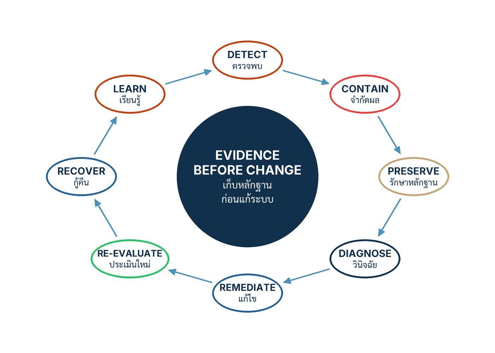

ในบทความนี้
- 1. อย่าสรุปว่า "โมเดลหลอน" — Incident, Near miss และ Hazard ต่างกันตรงไหน
- 2. วงจรแปดขั้นในรูปที่ 13 — จาก Detect ถึง Learn บนแกน "เก็บหลักฐานก่อนแก้ระบบ"
- 3. Artifact 6 — Trace schema เก้ากลุ่ม และแบบทดสอบเจ็ดข้อของผู้ตรวจอิสระ
- 4. CX-REFUND-01 — เดินครบทั้งวงจรกับเหตุการณ์หนึ่งกรณี
- 5. Artifact 8 — ใบงานแปดขั้น Action, Evidence, Owner และ Done-when
- 6. Near miss, Override และ Correction คือหลักฐาน ไม่ใช่เรื่องน่าอาย
- 7. ตัวชี้วัดของวงจรเรียนรู้ และรูปแบบความล้มเหลวที่พบซ้ำ
- 8. ก้าวต่อไป — จากหลักฐานของหนึ่งเหตุการณ์ สู่ระบบหลักฐานชุดเดียว
In this post
- 1. Do Not Settle for "the Model Hallucinated" — Incident, Near Miss and Hazard
- 2. Figure 13's eight-stage loop — from Detect to Learn on the axis "evidence before change"
- 3. Artifact 6 — the nine-group trace schema and the reviewer's seven-part test
- 4. CX-REFUND-01 — walking one incident through the whole loop
- 5. Artifact 8 — the eight-stage worksheet: Action, Evidence, Owner, Done-when
- 6. Near misses, overrides and corrections are evidence, not embarrassments
- 7. Metrics for the learning loop, and the failure patterns that keep coming back
- 8. The road ahead — from one incident's evidence to a single evidence system
🤔 ลูกค้าได้รับคำอธิบายสิทธิ์ที่ผิดจากหน้าโปรโมชันเก่าที่ยังค้างอยู่ใน allow-list — นี่คือความผิดของโมเดล ของ corpus ของรางควบคุม หรือของกระบวนการ?
ตอนที่แล้ว — #14 Five Tracks, One Release Gate — จบลงที่ด่านอนุมัติการนำระบบออกใช้ (release gate) ตารางแปดแถวที่บังคับให้การปล่อยระบบกลายเป็นคำตัดสินที่เขียนลงกระดาษได้ ว่าเป็น Promote, Canary, Hold หรือ Reject และผมทิ้งท้ายไว้ด้วยประโยคที่ทุกทีมได้ยินแล้วพยักหน้า แต่แทบไม่มีทีมไหนซ้อมจริง คือ Production ไม่ใช่จุดจบของการประเมิน มันคือสภาพประเมินสุดท้าย[1] คำถามที่ค้างอยู่จึงเป็นคำถามที่หลีกไม่พ้น: เมื่อสภาพประเมินสุดท้ายนั้นให้ผลออกมาเป็น "เกิดเรื่องแล้ว" นาทีแรกเราทำอะไร
คำตอบหนึ่งบรรทัดของบทที่ 9 สั้นและขัดสัญชาตญาณของวิศวกรทุกคน — เก็บหลักฐานก่อนแก้ระบบ เพราะการรีบ deploy patch ก่อนเก็บ Manifest และ Trace คือการทำลายพยานปากเดียวที่จะบอกได้ว่าอะไรทำให้มันเกิด และเพราะ "การเรียนรู้จะสมบูรณ์ก็ต่อเมื่อมาตรการแก้ผ่านการยืนยันผลและมีการติดตามการเกิดซ้ำ" ไม่ใช่ตอนที่ระบบกลับมาให้บริการ[1] บทความนี้จะพาเดินจากนิยามที่คนสับสนที่สุดสามคำ ผ่านวงจรแปดขั้นในรูปที่ 13 ผ่าน Trace schema เก้ากลุ่มที่ทำให้การย้อนสร้างเหตุการณ์เป็นไปได้จริง ไปจบที่ใบงานที่กรอกได้ในห้องประชุมจริง พร้อมเดินกรณี CX-REFUND-01 ครบทั้งวงจรให้ดูทีละขั้น
1. อย่าสรุปว่า "โมเดลหลอน" — Incident, Near miss และ Hazard ต่างกันตรงไหน
ในการทบทวนเหตุการณ์ที่ผมเคยนั่งฟังมา ประโยคที่ปรากฏบ่อยที่สุดในสไลด์หน้าสรุปคือ "โมเดล hallucinate" และมันคือประโยคที่ปิดการเรียนรู้ได้เร็วที่สุดเท่าที่ผมเคยเห็น เพราะเมื่อสาเหตุรากถูกเขียนว่าเป็นธรรมชาติของโมเดล สิ่งที่เหลือให้ทำก็มีแค่ "เปลี่ยน prompt" หรือ "รอโมเดลรุ่นหน้า" ทั้งที่เหตุการณ์เดียวกันนั้นเดินผ่านราง เดินผ่านการค้นคืน เดินผ่านการตรวจ เดินผ่านการอนุมัติ และเดินผ่านมือคนมาแล้วหลายด่าน
คู่มือจึงปิดท้าย Artifact 8 ด้วยกฎที่ผมอยากให้ทุกทีมพิมพ์แปะไว้บนผนังห้อง war room[1]
"Preserve the failed case before changing it. Do not reduce a system incident to 'the model hallucinated.' Ask which boundary admitted, trusted, authorized, released, or failed to observe the behavior." — เก็บกรณีที่เสียไว้ก่อนแก้ และอย่าสรุปเพียงว่า "โมเดลหลอน" ต้องถามว่า Boundary ใดยอมรับ เชื่อ อนุญาต ปล่อย หรือมองไม่เห็นพฤติกรรมนั้น
คำถามในประโยคสุดท้ายคือเครื่องมือวินิจฉัยจริง ๆ ไม่ใช่วาทศิลป์ เพราะกริยาห้าคำนั้นชี้ไปที่ห้าตำแหน่งที่ต่างกันในระบบ — ยอมรับ คือรางอินพุตหรือ allow-list ของแหล่งข้อมูล เชื่อ คือชั้นการค้นคืนและตัวให้คะแนนความสอดคล้อง อนุญาต คือด่านควบคุมก่อนเกิดผล ปล่อย คือรางเอาต์พุต และ มองไม่เห็น คือความสามารถในการสังเกตระบบ (observability) ที่บางลงจนสัญญาณไม่ถึงคน ถ้าคำตอบของคุณคือ "โมเดล" คุณยังไม่ได้ตอบคำถามนี้เลยสักข้อ
สามคำที่ต้องแยกให้ออกตั้งแต่นาทีแรก
ก่อนจะเริ่มวงจร ต้องแยกให้ออกว่าเรากำลังอยู่ในเหตุการณ์ประเภทไหน เพราะประเภทเป็นตัวกำหนดว่าองค์กรติดค้างอะไรกับใคร คู่มือให้นิยามไว้สองประโยค กระชับจนแทบเป็นสมการ[1]
"An incident is a realized harm. A near miss or hazard reveals credible harm before full impact." — Incident คือความเสียหายที่เกิดขึ้นจริง ส่วน Near miss หรือ Hazard คือสิ่งที่เปิดเผยอันตรายที่น่าเชื่อถือก่อนผลกระทบเต็มรูปแบบ
ข้อสังเกตที่สำคัญและมักถูกอ่านข้าม คือคู่มือจับ Near miss กับ Hazard ไว้เป็นคู่เดียวกัน ไม่ได้แยกเป็นสองหมวด ถ้าเราอยากแยกสามทางจริง ๆ ต้องไปหยิบนิยามจากที่อื่นมาช่วย และแหล่งที่ตรงที่สุดคือ AI Incidents and Hazards Monitor (AIM) ของ OECD.AI ซึ่งประกาศนิยามของตัวเองไว้เมื่อเดือนพฤษภาคม 2024 ว่า AI incident คือเหตุการณ์ที่การพัฒนา การใช้ หรือการทำงานผิดพลาดของระบบ AI นำไปสู่ ความเสียหายในหมวดที่ระบุไว้ทั้งทางตรงและทางอ้อม ส่วน AI hazard คือเหตุการณ์ที่ "could plausibly lead to" ความเสียหายหมวดเดียวกัน[3] ต้องย้ำว่านิยามชุดนี้เป็นนิยามที่ OECD ประกาศใช้กับเครื่องมือเฝ้าระวังของตัวเอง ไม่ใช่มาตรฐานที่บังคับใคร และไม่ใช่นิยามทางกฎหมาย
ฝั่งมาตรฐาน NIST AI 600-1 ซึ่งเป็น Generative AI Profile ของกรอบบริหารความเสี่ยง AI เผยแพร่เมื่อกรกฎาคม 2024[2] ก็ นำนิยามของ AI incident มาแสดงซ้ำ ในภาคผนวก A.1.8 ไม่ได้บัญญัติขึ้นเอง โดยเขียนว่า AI incident "can be defined as" เหตุการณ์หรือชุดเหตุการณ์ที่นำไปสู่การบาดเจ็บหรือกระทบสุขภาพของบุคคลหรือกลุ่มบุคคล (รวมถึงผลกระทบทางจิตใจ) การหยุดชะงักของโครงสร้างพื้นฐานสำคัญ การละเมิดสิทธิมนุษยชนหรือหน้าที่ตามกฎหมายที่คุ้มครองสิทธิขั้นพื้นฐาน สิทธิแรงงานและทรัพย์สินทางปัญญา หรือความเสียหายต่อทรัพย์สิน ชุมชนและสิ่งแวดล้อม[2] จุดที่ผมอยากให้สังเกตคือรายการนี้ไม่มีคำว่า "ระบบล่ม" อยู่เลย — มันเป็นรายการความเสียหายต่อคน ไม่ใช่รายการอาการของเครื่อง
| Category | นิยามที่ใช้ | สิ่งที่องค์กรติดค้าง | ที่มาของนิยาม |
|---|---|---|---|
| Incident | ความเสียหายที่เกิดขึ้นจริงแล้ว ทั้งทางตรงและทางอ้อม ต่อคน สิทธิ ทรัพย์สิน ชุมชน หรือโครงสร้างพื้นฐาน | จำกัดผล เยียวยาผู้ได้รับผล แจ้งตามหน้าที่ที่มี เก็บหลักฐาน และเดินครบวงจรจนถึงการยืนยันมาตรการแก้ | คู่มือ บทที่ 9 · นิยามที่ NIST AI 600-1 นำมาแสดงซ้ำใน A.1.8 |
| Near miss | เหตุที่เดินไปเกือบสุดทางแล้ว แต่มีตัวควบคุมหรือคนดักไว้ทัน จึงไม่เกิดผลเต็มรูปแบบ | บันทึกเหมือน Incident เพราะเป็นหลักฐานคุณภาพสูงที่ได้มาโดยไม่มีใครเสียหาย | คู่มือ บทที่ 9 (จับคู่กับ Hazard) · NIST มีการกระทำที่แนะนำให้บันทึกและติดตาม Near miss โดยเฉพาะ |
| Hazard | สภาพหรือเหตุการณ์ที่ "น่าเชื่อได้ว่าจะนำไปสู่" ความเสียหายหมวดเดียวกัน แม้ยังไม่มีใครเสียหาย | ประเมินความเป็นไปได้ ปรับตัวควบคุมล่วงหน้า และนำเข้าชุดทดสอบก่อนที่มันจะกลายเป็น Incident | นิยามแยกของ OECD.AI AIM ที่ประกาศเมื่อพฤษภาคม 2024 สำหรับเครื่องมือเฝ้าระวังของตัวเอง |
ความต่างนี้ไม่ใช่เรื่องคำศัพท์ ในทางปฏิบัติมันเป็นตัวกำหนดสองอย่างพร้อมกัน — หนึ่ง องค์กรติดค้างการเยียวยาและการแจ้งกับใครบ้าง สอง ทีมจะได้เรียนรู้จากเหตุการณ์นี้ในราคาเท่าไร เพราะ Near miss คือหลักฐานคุณภาพเดียวกับ Incident ที่ได้มาฟรี และองค์กรจำนวนมากเลือกจ่ายราคาเต็มทั้งที่มีของฟรีวางอยู่ตรงหน้า เพียงเพราะไม่มีช่องให้บันทึกมัน
2. วงจรแปดขั้นในรูปที่ 13 — จาก Detect ถึง Learn บนแกน "เก็บหลักฐานก่อนแก้ระบบ"
รูปที่ 13 ของคู่มือวาดวงจรเรียนรู้จากเหตุการณ์ผิดปกติ (incident-learning loop) ไว้เป็นวงกลมแปดโหนดหมุนรอบแกนกลางเดียว และแกนกลางนั้นไม่ใช่ขั้นตอน แต่เป็นหลักการที่กำกับทุกขั้น
{kind=link}

วงจรในรูปมีแปดขั้น[1] — Detect ตรวจพบ, Contain จำกัดผล, Preserve รักษาหลักฐาน, Diagnose วินิจฉัย, Remediate แก้ไข, Re-evaluate ประเมินใหม่, Recover กู้คืน และ Learn เรียนรู้ — หมุนรอบแกนกลางสีเข้มที่เขียนว่า EVIDENCE BEFORE CHANGE / เก็บหลักฐานก่อนแก้ระบบ
ประโยคที่คู่มือใช้ไล่ลำดับการตอบสนองในเนื้อความบท เขียนไว้แบบนี้ และผมยกมาทั้งประโยคเพราะครึ่งหลังมีค่ามากกว่าครึ่งแรก[1]
"Respond by detecting, containing, preserving evidence, scoping, diagnosing, remediating, reevaluating, recovering, and learning. Bound effects first, preserve the manifest and traces before modification, inspect authoritative external state, and add both the actual case and hidden neighboring cases to evaluation."
ครึ่งหลังคือคำสั่งสี่ข้อที่เรียงลำดับความสำคัญไว้แล้ว — จำกัดผลก่อน จากนั้น เก็บ Manifest และ Trace ก่อนจะแก้อะไร แล้วจึง ตรวจสถานะจริงจากระบบที่เชื่อถือได้ และสุดท้าย เพิ่มทั้งกรณีจริงและกรณีข้างเคียงที่ซ่อนอยู่เข้าไปในชุดประเมิน สังเกตว่าคำสั่งข้อที่สองมาก่อนการวินิจฉัย ไม่ใช่หลัง เพราะการวินิจฉัยส่วนใหญ่ทำโดยการแก้ไขบางอย่างแล้วดูว่าอาการหายไหม ซึ่งเป็นการเขียนทับพยานหลักฐานโดยไม่ตั้งใจ
| Stage | สิ่งที่ทำในขั้นนี้ | คำถามที่ต้องตอบก่อนไปขั้นถัดไป |
|---|---|---|
| Detect ตรวจพบ | รับสัญญาณจากการเฝ้าระวัง จากข้อร้องเรียน จาก Override ของผู้ปฏิบัติงาน หรือจากการตรวจสอบภายใน แล้วประกาศเหตุการณ์อย่างเป็นทางการพร้อมตั้ง Commander | เวลาที่เกิดคือเมื่อไร ขอบเขตผู้ได้รับผลกว้างแค่ไหน และใครเป็นเจ้าของเหตุการณ์นี้ตั้งแต่นาทีนี้ |
| Contain จำกัดผล | ปิด Capability, Traffic หรือ Slice ที่เกี่ยวข้อง พา Workflow กลับสู่ภาวะปลอดภัยเมื่อระบบล้มเหลว (fail-safe state) ส่งกรณีที่เหลือให้คน และเยียวยาผู้ได้รับผล | ยังมีผู้ได้รับผลรายใหม่เกิดขึ้นอยู่หรือไม่ และเส้นทางที่เหลืออยู่ปลอดภัยพอให้ระบบเดินต่อได้จริงหรือ |
| Preserve รักษาหลักฐาน | ตรึง Manifest, Trace, Context ที่ใช้จริง ณ เวลานั้น รวมถึงเวอร์ชันของ corpus, ตัวให้คะแนน และเกณฑ์ที่บังคับใช้ ก่อนแตะโค้ดหรือคอนฟิกใด ๆ | ถ้าเรากด rollback ในนาทีถัดไป เรายังย้อนสร้างเหตุการณ์นี้ได้ครบทุกขั้นหรือไม่ |
| Diagnose วินิจฉัย | ไล่หาสาเหตุทั้งด้านเทคนิค ข้อมูล Workflow ความเป็นเจ้าของ และแรงจูงใจ พร้อมตอบว่าทำไมการตรวจจับหรือการรับมือถึงไม่ทัน | Boundary ใดยอมรับ เชื่อ อนุญาต ปล่อย หรือมองไม่เห็นพฤติกรรมนั้น และเราตอบได้ด้วยหลักฐาน ไม่ใช่ด้วยการเดา |
| Remediate แก้ไข | แยกมาตรการเฉพาะหน้าออกจากมาตรการถาวร กำหนดเจ้าของและวันครบกำหนด แล้วปรับ Contract, Manifest, Runbook และการฝึกอบรมให้สอดคล้อง | มาตรการถาวรตัวไหนที่ทำให้กรณีนี้เกิดซ้ำไม่ได้ ไม่ใช่แค่ทำให้ตรวจพบเร็วขึ้น |
| Re-evaluate ประเมินใหม่ | เปลี่ยนกรณีที่พังให้เป็น Regression test ที่มีชื่อ แล้วรันร่วมกับชุด Hidden, Adaptive และกรณีข้างเคียงที่ยังไม่เคยถูกทดสอบ | ชุดประเมินตอนนี้จะจับเหตุการณ์เดียวกันได้หรือไม่ ถ้าถูกปล่อยเข้ามาอีกครั้งวันนี้ |
| Recover กู้คืน | กลับมาให้บริการแบบเปิดรับทีละน้อย พร้อมกำหนดรอบทบทวนที่สั้นลง เพดาน exposure ที่ต่ำลง และเส้นทางหยุดที่ซ้อมแล้ว | ถ้ามันกลับมาอีกในชั่วโมงหน้า เรารู้ตัวภายในกี่นาที และถอยกลับได้ในกี่นาที |
| Learn เรียนรู้ | สื่อสารกับผู้ได้รับผล ชดเชย เฝ้าการเกิดซ้ำ แชร์รูปแบบข้ามผลิตภัณฑ์ และปิดเหตุการณ์ด้วยหลักฐานเท่านั้น | ผลิตภัณฑ์อื่นที่มีจุดอ่อนแบบเดียวกันได้รับการแก้ไปด้วยหรือยัง และเราปิดด้วยหลักฐานอะไร |
ประโยคที่กำหนดว่าเมื่อไรถือว่าจบ คือประโยคปิดย่อหน้าเหตุการณ์ในบทที่ 9 และมันเข้มกว่าที่หลายองค์กรใช้อยู่มาก[1]
"Learning is complete only when the corrective control or design change is verified and recurrence is monitored." — การเรียนรู้สมบูรณ์เมื่อ Control หรือ Design ใหม่ผ่านการยืนยันและติดตามการเกิดซ้ำแล้วเท่านั้น
คำที่ทำงานหนักที่สุดคือ verified และ monitored เพราะทั้งสองคำเป็นกริยาที่ต้องมีหลักฐานรองรับ ไม่ใช่สถานะที่ประกาศได้ในที่ประชุม การเขียนใน ticket ว่า "แก้แล้ว" ไม่ใช่การยืนยัน การมีมาตรการอยู่ในเอกสารก็ไม่ใช่ และการที่ไม่มีใครร้องเรียนเข้ามาอีกภายในสองวันก็ไม่ใช่การติดตามการเกิดซ้ำ
ฝั่งมาตรฐานเดินไปทางเดียวกัน NIST AI 600-1 มีการกระทำที่แนะนำ (Suggested Action) ให้จัดทำและปรับปรุงแผนตอบสนองและกู้คืนเหตุการณ์สำหรับระบบ GenAI โดยครอบคลุมถึงการใช้งานรูปแบบใหม่ที่ไม่ได้คาดไว้ และครอบคลุมทั้งห่วงโซ่คุณค่าพร้อมช่องทางติดต่อของผู้เกี่ยวข้องปลายทาง และอีกรายการหนึ่งให้ทำ after-action assessment เพื่อยืนยันว่ากระบวนการตอบสนองและกู้คืนถูกปฏิบัติตามจริงและได้ผลจริง[2] ต้องย้ำให้ชัดว่าเอกสารฉบับนี้เป็นข้อเสนอโดยสมัครใจ ไม่ใช่ข้อบังคับ — คำว่า Suggested Actions คือคำของ NIST เอง องค์กรต้องเลือกและปรับให้เข้ากับกรณีใช้งานและระดับความเสี่ยงที่ตัวเองรับได้
3. Artifact 6 — Trace schema เก้ากลุ่ม และแบบทดสอบเจ็ดข้อของผู้ตรวจอิสระ
ขั้น Preserve จะทำไม่ได้เลยถ้าไม่มีอะไรให้เก็บ และนี่คือเหตุผลที่คู่มือวาง Artifact 6 ไว้ก่อน Artifact 8 — ร่องรอยที่สร้างเหตุการณ์ย้อนกลับได้ (reconstructable trace) ไม่ใช่ของที่หาได้ตอนเกิดเรื่อง มันเป็นของที่ต้องออกแบบไว้ก่อนตั้งแต่ตอนที่ยังไม่มีเรื่องอะไรเกิดขึ้น คู่มือเขียนวัตถุประสงค์ของ Artifact นี้ไว้ประโยคเดียว และตามด้วยประโยคที่สั้นกว่าแต่คมกว่า[1]
"Preserve enough evidence for a later authorized reviewer to reconstruct what the system knew, proposed, checked, did, released, and why it chose that route. Auditable means reconstructable, not safe." — เก็บหลักฐานให้พอที่ผู้ตรวจซึ่งมีสิทธิ์ในภายหลังจะย้อนสร้างได้ว่าระบบรู้อะไร เสนออะไร ตรวจอะไร ทำอะไร ปล่อยอะไร และเลือก Route นั้นเพราะเหตุใด · Auditable แปลว่าย้อนสร้างได้ ไม่ได้แปลว่าปลอดภัย
ประโยคหลังคือประโยคที่ผมอยากให้ทีม compliance อ่านช้า ๆ เพราะการมี log ครบไม่ได้แปลว่าระบบปลอดภัย มันแปลแค่ว่าถ้าเกิดเรื่อง เราจะรู้ว่าเกิดอะไร สองเรื่องนี้ต่างกันมากพอที่จะทำให้องค์กรที่สับสนระหว่างสองคำนี้ ลงทุนผิดทางไปทั้งปี
เก้ากลุ่ม event ที่ต้องเก็บ
Trace schema ของคู่มือมีเก้ากลุ่ม event[1] — Identity, Release identity, Input and state, Context and retrieval, Checks, Generation, Effect, Release และ Operations ผมยึดโครงเก้ากลุ่มนี้ทั้งในฉบับภาษาไทยและฉบับภาษาอังกฤษ ทั้งที่ตารางภาษาไทยในเล่มบีบเหลือแปดแถวโดยยุบ Release กับ Operations เข้าด้วยกัน เพราะการยุบนั้นเป็นการย่อเพื่อจัดหน้า ไม่ใช่ schema คนละชุด และในทางปฏิบัติ Release กับ Operations ตอบคำถามคนละคำถามอย่างชัดเจน
| Event group | Required fields | What it lets a reviewer do |
|---|---|---|
| 1. Identity | Trace/Request/Session ID, Principal ที่ยืนยันตัวตนแล้วและ Subject, เวลา, ภาษาและ locale, Channel, การอ้างอิงความยินยอมหรือฐานทางกฎหมาย | รู้ว่าใครถาม ในนามของใคร ผ่านช่องทางไหน เมื่อไร และด้วยฐานอะไร |
| 2. Release identity | Manifest, ID ของโมเดลและตัวประเมิน, ค่า decoding, เวอร์ชันของนโยบายและ Threshold | ระบุได้ว่าเหตุการณ์นี้เกิดบนระบบรุ่นไหน — คำถามแรกที่ตอบไม่ได้แล้วทุกอย่างที่เหลือพัง |
| 3. Input and state | คำขอเดิมหรือ Protected reference, สถานะก่อนหน้า, Dialog transition, ป้าย Trusted/Untrusted ของแต่ละชิ้นส่วน | แยกได้ว่าอะไรมาจากผู้ใช้ อะไรมาจากระบบ และอะไรที่ระบบไม่ควรเชื่อตั้งแต่แรก |
| 4. Context and retrieval | Assembly hash, บริบทที่ใช้จริงหรือ Replay reference, เวอร์ชันของ corpus และตัวจัดอันดับ, Query, ลำดับ Passage ID, Text hash และที่มาของข้อมูลและผลลัพธ์ (provenance) | ชี้ตัวเอกสารที่ทำให้ระบบตอบแบบนั้นได้ทีละชิ้น พร้อมรู้ว่ามันมาจากไหนและรุ่นไหน |
| 5. Checks | รางตามลำดับที่เดินผ่าน, เวอร์ชันและคลาสของตัวควบคุม, Score, Threshold, รายการ Violation, Verdict และ Latency | เห็นว่าด่านไหนตรวจแล้วผ่าน ด่านไหนตรวจแล้วไม่ผ่าน และผ่านด้วยคะแนนห่างจากเกณฑ์เท่าไร |
| 6. Generation | Candidate hash และ payload ที่ป้องกันไว้, Citation, เครื่องมือและอาร์กิวเมนต์ที่ถูกเสนอ | อ่าน ข้อเสนอ ของโมเดลได้ตรง ๆ โดยไม่ต้องเดาจากผลลัพธ์ปลายทาง |
| 7. Effect | Identity binding, Authorization, Approval, Idempotency, Pre-state, Normalized call, Result, Post-state, Exception | พิสูจน์ว่ามีผลจริงเกิดขึ้นหรือไม่ เกิดกี่ครั้ง และสถานะจริงเปลี่ยนจากอะไรเป็นอะไร |
| 8. Release | Output hash และ payload reference, รายการ Redaction, Route ที่เลือก: release, withhold, escalate หรือ fail closed | รู้ว่าอะไรถูกส่งถึงผู้ใช้จริง และระบบเลือกเส้นทางปลายทางแบบไหน |
| 9. Operations | Cost/Token เท่าที่จำเป็น, Terminal time, Retention class, Access log, Integrity signature, Linked incident | ตรวจได้ว่าใครเปิดดูหลักฐานชุดนี้ หลักฐานถูกแก้หรือไม่ และผูกกับเหตุการณ์ไหน |
สังเกตว่าเก้ากลุ่มนี้ไม่ใช่การเรียงตามลำดับเวลาอย่างเดียว แต่เรียงตาม คำถามที่ผู้ตรวจจะถาม และจุดที่ผมเห็นทีมพลาดบ่อยที่สุดคือกลุ่มที่ 2 กับกลุ่มที่ 9 — ทีมส่วนใหญ่เก็บ input, output และ latency ครบถ้วน แต่เก็บ บัญชีรายการบริบทขณะทำงาน (runtime-context manifest) ไม่ครบ พอถึงเวลาย้อนสร้าง จึงตอบไม่ได้ว่าเหตุการณ์เกิดบน manifest ตัวไหน และการย้อนสร้างที่เหลือก็เป็นการเดาทั้งหมด
แบบทดสอบเจ็ดข้อ
คู่มือปิดตาราง schema ด้วยประโยคเดียวที่เป็นแบบทดสอบใช้งานได้จริง — ไม่ต้องรอผู้ตรวจมาถึงก็ทดสอบเองได้วันนี้ ผู้ตรวจอิสระต้องทำได้เจ็ดอย่าง[1] คือ ระบุ Release ที่เกิดเหตุ, สร้างหลักฐาน ณ เวลาตัดสินใจขึ้นมาใหม่, Replay hard check ได้, เห็นทั้ง Score และ Threshold คู่กัน, แยกข้อเสนอออกจากผลจริง, ยืนยัน Final state และอธิบาย Route ที่ระบบเลือก
ข้อที่คนตัดทิ้งบ่อยที่สุดคือข้อที่สี่ — เห็น Score โดยไม่เห็น Threshold ที่บังคับใช้อยู่ ณ ตอนนั้น เพราะเกณฑ์มักถูกเก็บไว้ในคอนฟิกที่เปลี่ยนได้ตลอดเวลาและไม่ถูกบันทึกลง trace เมื่อเกณฑ์ถูกปรับหลังเกิดเหตุ ตัวเลข 0.91 ในหลักฐานก็กลายเป็นตัวเลขที่ตีความไม่ได้อีกต่อไป และข้อที่ห้า — แยกข้อเสนอออกจากผลจริง — คือข้อที่แยกระบบที่ออกแบบด้วยการแยกข้อเสนอออกจากผลจริง (proposal–effect separation) ออกจากระบบที่ไม่ได้ออกแบบมาแบบนั้น เพราะถ้า trace ไม่แยกสองสิ่งนี้ ก็ไม่มีทางรู้ว่าด่านควบคุมทำงานหรือโมเดลบังเอิญเสนอถูก
คำศัพท์ที่ใช้อธิบายว่าสิ่งเหล่านี้ "เป็นอะไร" ในเชิงโครงสร้าง มีมาตรฐานกลางรองรับอยู่แล้ว PROV-O ของ W3C ให้คำศัพท์ตั้งต้นไว้ สามชนิด[4] — entity คือสิ่งที่ถูกกระทำ (เอกสารที่ค้นคืนมาหนึ่งชิ้น, payload หนึ่งก้อน), activity คือการกระทำที่กินเวลา (การตรวจของด่านหนึ่งครั้ง, การเรียกเครื่องมือหนึ่งครั้ง) และ agent คือผู้ที่แบกความรับผิดชอบต่อการกระทำนั้น (ผู้อนุมัติ, service owner, ระบบที่ทำงานแทน) PROV-O เป็น W3C Recommendation มาตั้งแต่ 30 เมษายน 2013 และ ณ วันที่เข้าถึงยังไม่มีประกาศยกเลิกหรือทดแทน แต่ขอบเขตของมันชัดเจนมาก: มันให้ คำศัพท์ ไม่ได้ให้นโยบายการตรวจสอบหรือแบบการจัดเก็บ ดังนั้น schema เก้ากลุ่มข้างบนคือการนำคำศัพท์นั้นมาลงรายละเอียดในโดเมนของเรา ไม่ใช่สิ่งเดียวกันและใช้แทนกันไม่ได้
คู่มือยังแบ่งความเป็นเจ้าของไว้สามฝ่ายอย่างชัดเจน ซึ่งเป็นการแบ่งที่ผมคิดว่าใช้ได้ทันทีในองค์กรไทย — SRE หรือ platform owner รับประกันว่าการเก็บทนทานและไม่หาย, ทีมคุ้มครองข้อมูลส่วนบุคคลเป็นเจ้าของเรื่องการลดข้อมูลและอายุการเก็บ ส่วนเจ้าของการตัดสินใจเป็นผู้ตรวจความหมาย ของสิ่งที่เก็บ[1] การแบ่งนี้แก้ปัญหาคลาสสิกที่ trace ถูกออกแบบโดยวิศวกรฝ่ายเดียว แล้วกลายเป็นข้อมูลที่ครบทางเทคนิคแต่ตอบคำถามเชิงนโยบายไม่ได้สักข้อ
Thai คู่กับ manifest rc4 และเวลา 10:42:16+07 — สามฟิลด์นี้คือความแตกต่างระหว่าง trace ที่ตรวจได้กับ trace ที่ตรวจไม่ได้ในองค์กรที่ให้บริการหลายภาษาและมี offset เวลาไม่ตรงกับสำนักงานใหญ่ ถ้าไม่บันทึก locale ก็แยกไม่ออกว่าคำตอบที่ผิดนั้นผิดเพราะนโยบาย หรือผิดเพราะการแปล และถ้าไม่บันทึก offset การเรียงลำดับเหตุการณ์ข้ามระบบจะคลาดกันเจ็ดชั่วโมงโดยไม่มีใครสังเกตฝั่งกฎหมาย พ.ร.บ. คุ้มครองข้อมูลส่วนบุคคล พ.ศ. 2562 ให้ข้อมูลนำเข้าการออกแบบอย่างน้อยสี่จุดกับ trace schema — มาตรา ๒๒ ให้เก็บรวบรวมข้อมูลส่วนบุคคลได้เท่าที่จำเป็นภายใต้วัตถุประสงค์อันชอบด้วยกฎหมาย, มาตรา ๓๓ (๑) ให้สิทธิเจ้าของข้อมูลขอให้ลบหรือทำลายเมื่อหมดความจำเป็นตามวัตถุประสงค์, มาตรา ๓๗ (๑) ให้จัดมาตรการรักษาความมั่นคงปลอดภัยที่เหมาะสมและทบทวนเมื่อเทคโนโลยีเปลี่ยน และมาตรา ๓๗ (๓) ให้จัดให้มี ระบบตรวจสอบเพื่อลบหรือทำลาย ข้อมูลเมื่อพ้นกำหนดระยะเวลาการเก็บรักษา — ข้อสุดท้ายนี้คือเหตุผลว่าทำไม Retention class จึงเป็นฟิลด์บังคับในกลุ่มที่ 9 ไม่ใช่ของแถม และมาตรา ๓๗ (๔) กำหนดให้แจ้งเหตุละเมิดข้อมูลส่วนบุคคลต่อสำนักงานโดยไม่ชักช้าภายใน 72 ชั่วโมง (เจ็ดสิบสองชั่วโมง) นับแต่ทราบเหตุ เท่าที่จะสามารถกระทำได้ เว้นแต่การละเมิดนั้นไม่มีความเสี่ยงต่อสิทธิและเสรีภาพของบุคคล และถ้ามีความเสี่ยงสูงต้องแจ้งเจ้าของข้อมูลพร้อมแนวทางเยียวยาด้วย[5] นาฬิกาเรือนนี้คือนาฬิกาเรือนเดียวในบทความนี้ที่มาจากภายนอกองค์กร และมันเดินทับขั้น Detect กับ Contain พอดี
ขอบเขตที่ต้องพูดให้ชัด: ทั้งหมดนี้เป็นข้อมูลนำเข้าการออกแบบ Runbook ไม่ใช่คำแนะนำทางกฎหมาย บทความนี้ไม่ตีความว่าฟิลด์ใดเป็นหรือไม่เป็นข้อมูลส่วนบุคคล ไม่ตีความว่าเหตุการณ์ใดเข้าข่ายต้องแจ้ง และไม่ระบุระยะเวลาเก็บรักษาที่ "ถูกต้อง" เพราะกฎหมายไม่ได้กำหนดอายุการเก็บ trace ไว้ ทั้งวิธีการและหลักเกณฑ์ตามมาตรา ๓๗ (๑) และ ๓๗ (๔) ยังถูกมอบให้คณะกรรมการประกาศกำหนดเพิ่มเติม ตัวบทและที่ปรึกษากฎหมายไทยที่มีคุณสมบัติเท่านั้นที่เป็นผู้ชี้ขาด ตอน #16 One Evidence System จะแมปหน้าที่เหล่านี้เข้ากับหลักฐานชุดเดียวอย่างละเอียด
4. CX-REFUND-01 — เดินครบทั้งวงจรกับเหตุการณ์หนึ่งกรณี
ทฤษฎีทั้งหมดข้างบนจะมีความหมายก็ต่อเมื่อมันเดินได้จริงกับเหตุการณ์หนึ่งเหตุการณ์ คู่มือจึงใช้กรณี CX-REFUND-01 ผู้ช่วยงานบริการลูกค้าของ Luma Commerce Thailand (กรณีสมมติจากหนังสือ) เป็นตัวเดินเรื่องมาตั้งแต่ต้นเล่ม และเดินมันครบทั้งวงจรใน Artifact 8 ตัวเลขทุกตัวในหัวข้อนี้เป็นค่าประกอบของกรณีสมมติ ไม่ใช่เกณฑ์ ไม่ใช่ค่าเฉลี่ยอุตสาหกรรม และห้ามยกไปใส่ตารางตัวชี้วัดเป็นเป้าหมาย
สิ่งที่เกิดขึ้น
ที่ Rollout 25% ลูกค้าคนหนึ่งได้รับคำอธิบายว่าตนมีสิทธิ์ภายใน 60 วัน ซึ่งเป็นข้อความที่มาจากหน้าโปรโมชันเก่าที่หมดอายุไปแล้ว แต่ยังค้างอยู่ใน allow-list ของแหล่งข้อมูล จากนั้นโมเดลเสนอคืนเงิน 2,400 บาทในวันที่ 45 นับจากวันที่กำหนด — ซึ่งเกินสิทธิ์จริง[1]
สิ่งที่เกิดขึ้นถัดมาคือหัวใจของกรณีนี้ทั้งหมด และเป็นเหตุผลที่ผมเลือกเล่ามันซ้ำจากตอน #13 Five Rails and the Effect Guard ในมุมใหม่ — Execution guard block การจ่ายเงินไว้ได้ แต่ Output rail ปล่อยคำอธิบายที่ผิดออกไป พูดอีกอย่างคือ เงินไม่ได้ออกจากบัญชีแม้แต่บาทเดียว แต่ลูกค้าได้รับคำสัญญาที่องค์กรทำตามไม่ได้ไปเรียบร้อยแล้ว
เมื่อ Stop condition ถูก trigger ทีมจึง Rollback กลับไปที่ manifest rc4 และส่งกรณีที่เกี่ยวกับโปรโมชันทั้งหมดให้คนดูแลแทน[1] สังเกตลำดับ: จำกัดผลก่อน แล้วค่อยเข้าสู่การย้อนสร้าง
สิ่งที่ Trace บอก และการจำแนกที่ตามมา
Trace ยืนยันว่าไม่มี Financial effect เกิดขึ้นจริง และชี้ตำแหน่งได้ครบสามจุด — corpus ลงวันที่ 2026-09-01, passage ที่เก่าและหมดอายุ, ตัวให้คะแนนความสอดคล้องที่ False accept และ payload ที่ถูกปล่อยออกไปแล้ว[1] จากหลักฐานชุดนี้ ทีมจำแนกเหตุการณ์ว่าเป็น severe semantic policy escape บวก near miss โดยที่ structural execution invariant ยังทำงานอยู่
ประโยคจำแนกประโยคเดียวนี้บรรจุแนวคิดสองคำที่ซีรีส์นี้พูดถึงมาตลอด และเป็นจุดที่ทีมส่วนใหญ่แยกไม่ออก — การรับประกันเชิงโครงสร้าง (structural guarantee) คือสิ่งที่พิสูจน์ได้แบบกำหนดแน่นอน เช่น "จะไม่มีการจ่ายเงินโดยไม่ผ่านการอนุมัติและไม่เกินวงเงิน" ส่วนค่าประเมินเชิงความหมาย (semantic estimate) คือคะแนนความน่าจะเป็นว่าข้อความนี้สอดคล้องกับนโยบายแค่ไหน ในกรณีนี้ ตัวแรกยืน ตัวหลังรั่ว และการรายงานผลว่า "ระบบทำงานถูกต้อง" หรือ "ระบบล้มเหลว" เพียงคำเดียวจะทำให้ผู้บริหารเข้าใจผิดทั้งสองทาง
| Boundary | ทำงานตามที่ออกแบบไว้หรือไม่ | หลักฐานจาก trace |
|---|---|---|
| Allow-list ของแหล่งข้อมูล | ไม่ — ตรวจ ID ของแหล่ง แต่ไม่ตรวจวันที่มีผลบังคับใช้ | Passage จากหน้าโปรโมชันที่หมดอายุ ผ่านเข้าสู่บริบทได้ตามปกติ |
| ตัวให้คะแนนความสอดคล้อง | ไม่ — ตรวจ textual entailment แต่ไม่ตรวจความเป็นปัจจุบันของนโยบาย | Support false accept: ข้อความสอดคล้องกับเอกสารจริง แต่เอกสารนั้นไม่ใช่นโยบายที่ใช้อยู่ |
| ด่านควบคุมก่อนเกิดผล (execution guard) | ใช่ — Block การจ่ายเงินไว้ได้ | ไม่มี Financial effect ปรากฏใน Effect group ของ trace |
| รางเอาต์พุต (output rail) | ไม่ — ปล่อยคำอธิบายที่ผิดถึงมือลูกค้า | Released payload ปรากฏใน Release group พร้อม Route เป็น release |
| เส้นทางส่งต่อให้คน | ใช่ (หลังจำกัดผล) — กรณีโปรโมชันถูกส่งให้คนดูแล | บันทึกการเปลี่ยน manifest และการเปลี่ยนเส้นทางในขั้น Contain |
ตารางข้างบนคือสิ่งที่ได้จากคำถาม "Boundary ใดยอมรับ เชื่อ อนุญาต ปล่อย หรือมองไม่เห็น" และผมอยากให้เปรียบเทียบกับสิ่งที่จะได้ถ้าสรุปว่า "โมเดลหลอน" — คือได้ศูนย์แถว การจำแนกที่ละเอียดขนาดนี้ทำได้เพราะ การควบคุมก่อนเกิดผล (effect mediation) ถูกออกแบบให้แยกออกจากการสร้างข้อความตั้งแต่ต้น trace จึงแยกข้อเสนอออกจากผลจริงได้
วินิจฉัย แก้ไข และกลับมาให้บริการ
การวินิจฉัยชี้สาเหตุสองชั้นที่ไม่ใช่ชั้นโมเดลเลยสักชั้น — allow-list ตรวจ ID แต่ไม่ตรวจ effective date และตัวให้คะแนนตรวจ entailment แต่ไม่ตรวจ policy currency[1] มาตรการแก้จึงกระจายไปที่เจ้าของงานคนละคน: เจ้าของฐานความรู้ถอดหน้าเก่าออก บังคับ metadata ของ Owner, Effective date และ Expiry เพิ่มการตรวจความขัดแย้งของเอกสาร ส่วนทีม CX Quality เพิ่มการตรวจความถูกต้องตามเวลา (time-validity check) และเพิ่มการแก้ไขคำอธิบายให้ลูกค้า
จากนั้นจึงมาถึงขั้นที่ผมคิดว่าเป็นขั้นที่ถูกข้ามบ่อยที่สุดในองค์กรจริง — กรณีที่พังกลายเป็น Regression case ที่มีชื่อ คือ CXGS-241 แล้วรันร่วมกับกรณี Hidden, Adaptive, Bilingual และ Duplicate-state ที่เกี่ยวข้อง จนผ่านทั้งหมด จากนั้น Policy reviewer อิสระจึงอนุมัติ manifest ใหม่ rc5 และเปิดกลับมาที่ 5% พร้อมรอบทบทวน 24 ชั่วโมง[1]
💡 มุมมองของผม: ลำดับ "Regression ก่อน Restore" คือเส้นแบ่งระหว่างองค์กรที่เรียนรู้กับองค์กรที่แค่ซ่อมของ ถ้ากรณีที่พังยังไม่มีชื่อและยังไม่อยู่ในชุดทดสอบที่รันทุกครั้ง แปลว่าองค์กรกำลังพนันว่าคนที่แก้จะไม่ลืม และในระบบที่มี manifest หลายรุ่นและทีมหลายทีม การพนันแบบนั้นแพ้เสมอ
ขั้นสุดท้ายคือการปิด และคู่มือกำหนดเงื่อนไขไว้ยาวกว่าที่ ticket ระบบไหนบังคับ — ปรับ Contract, Manifest schema, Workflow การเผยแพร่แหล่งข้อมูล และ Runbook, นำ Freshness check ชุดเดียวกันไปใช้กับผลิตภัณฑ์คืนสินค้าและการรับประกันด้วย แล้วปิดได้ก็ต่อเมื่อลูกค้าได้รับการเยียวยาแล้ว มีการเฝ้าการเกิดซ้ำเป็นเวลา เจ็ดวัน และมีการลงนามทบทวนหลักฐาน[1] ประโยค "นำ Freshness check ไปใช้กับผลิตภัณฑ์อื่นด้วย" คือประโยคที่เปลี่ยนเหตุการณ์หนึ่งครั้งให้กลายเป็นการปรับปรุงที่นำกลับมาใช้ซ้ำได้ — และเป็นสิ่งที่ตัวชี้วัดในหัวข้อที่ 7 จะพยายามวัด
5. Artifact 8 — ใบงานแปดขั้น Action, Evidence, Owner และ Done-when
Artifact 8 คือรูปแบบใช้งานจริงของวงจรในหัวข้อที่ 2 คู่มือระบุวัตถุประสงค์ เงื่อนไขการใช้ และเจ้าของหลักไว้ครบสามบรรทัด[1] — วัตถุประสงค์ คือเปลี่ยนความล้มเหลวให้เป็นการจำกัดผล หลักฐาน การแก้ที่ยืนยันแล้ว และความจำขององค์กร ใช้เมื่อ เกิด Prohibited effect, Semantic escape ที่รุนแรงหรือเกิดซ้ำ, Trace loss, Privacy event, Control bypass, สัญญาณ Drift หรือ Near miss และ เจ้าของหลัก คือ Incident commander เป็นผู้ประสานงาน โดยเจ้าของด้านการตัดสินใจ วิศวกรรม ความมั่นคง ความเป็นส่วนตัว และคน ยังคงรับผิดชอบในขอบเขตของตนเหมือนเดิม
ชื่อขั้นของ Artifact 8 ไม่เหมือนชื่อโหนดในรูปที่ 13 เสียทีเดียว — ที่นี่ใช้ Detect and declare, Contain, Reconstruct, Classify, Diagnose, Correct, Verify and restore, Learn ซึ่งเป็นแปดขั้นเช่นกันแต่เป็นคนละชุดคำ ผมยึดชุดของ Artifact 8 ในใบงานนี้ทั้งหมด และไม่ผสมกับชุดของรูปที่ 13
คู่มือให้คอลัมน์เดียวคือ "Record and decide" ผมขยายเป็นสี่คอลัมน์ที่ใช้ได้ในห้องประชุมจริง — Action ทำอะไร, Evidence ต้องมีหลักฐานอะไรจึงจะถือว่าทำแล้ว, Owner ใครเป็นเจ้าของ และ Done-when เงื่อนไขที่ทำให้ขั้นนี้ปิดได้ คอลัมน์สุดท้ายคือคอลัมน์ที่ป้องกันโรคยอดฮิตที่สุดของการทบทวนเหตุการณ์ คือการเดินหน้าไปขั้นถัดไปทั้งที่ขั้นก่อนหน้ายังค้าง
ใบงานเปล่า — พิมพ์ไปกรอกได้เลย
| Stage | Action | Evidence | Owner | Done-when |
|---|---|---|---|---|
| 1. Detect and declare | บันทึกสัญญาณ เวลา ขอบเขตผู้ได้รับผล และ Severity เบื้องต้น แล้วประกาศตั้ง Commander | รายการสัญญาณพร้อม timestamp, ประมาณการขอบเขต, บันทึกการประกาศเหตุการณ์ | ผู้พบเหตุ → Incident commander | มีชื่อ Commander และมี Severity เบื้องต้นที่บันทึกไว้เป็นลายลักษณ์อักษร |
| 2. Contain | ปิด Capability, Traffic หรือ Slice ที่เกี่ยวข้อง, เยียวยาลูกค้า, Rollback และรักษาหลักฐาน | บันทึกคำสั่งปิดพร้อมเวลา, รายการผู้ได้รับผลที่ติดต่อแล้ว, ID ของ manifest ที่ถอยกลับไป | Service owner ร่วมกับ Incident commander | ไม่มีผู้ได้รับผลรายใหม่ และหลักฐานถูกตรึงแล้วก่อนการแก้ไขใด ๆ |
| 3. Reconstruct | ประกอบ Trace, Manifest, Context, Source, Checks, Proposal, Effect, Output และ Final state ขึ้นใหม่ | Trace ที่ผ่านแบบทดสอบเจ็ดข้อในหัวข้อที่ 3, สถานะจริงจากระบบต้นทางที่เชื่อถือได้ | SRE หรือ platform owner | ผู้ตรวจที่ไม่ได้อยู่ในเหตุการณ์อ่านแล้วเล่าเรื่องซ้ำได้ครบโดยไม่ต้องถามทีม |
| 4. Classify | จำแนก Harm และ Near miss, แยก Structural breach ออกจาก Semantic escape, ระบุผู้ได้รับผลและภาระหน้าที่ที่ตามมา | ตารางจำแนกที่ชี้ Boundary ทีละด่านว่ายืนหรือรั่ว พร้อมหลักฐานอ้างอิงต่อแถว | เจ้าของการตัดสินใจ ร่วมกับความเสี่ยงและความเป็นส่วนตัว | มีคำจำแนกเดียวที่ทุกฝ่ายเห็นตรงกัน และรู้ว่าองค์กรติดค้างการแจ้งหรือเยียวยากับใคร |
| 5. Diagnose | ไล่สาเหตุด้านเทคนิค ข้อมูล Workflow Ownership และ Incentive พร้อมตอบว่าทำไมตรวจหรือรับมือไม่ทัน | เส้นเวลาเทียบสัญญาณกับการตอบสนอง, จุดที่หลักฐานขาด, เหตุผลที่เกณฑ์เดิมปล่อยผ่าน | วิศวกรรม ร่วมกับเจ้าของกระบวนงาน | ตอบคำถาม "Boundary ใดยอมรับ เชื่อ อนุญาต ปล่อย หรือมองไม่เห็น" ได้ทุกข้อด้วยหลักฐาน |
| 6. Correct | แยกมาตรการเฉพาะหน้ากับมาตรการถาวร กำหนดเจ้าของและวันครบกำหนด แล้วปรับ Contract, Manifest, Runbook และการฝึกอบรม | รายการมาตรการที่มีเจ้าของและวันครบกำหนด, diff ของ Contract และ Manifest, Runbook ฉบับปรับปรุง | เจ้าของมาตรการแต่ละราย ภายใต้ Commander | มีมาตรการถาวรอย่างน้อยหนึ่งข้อที่ทำให้กรณีนี้เกิดซ้ำไม่ได้ ไม่ใช่แค่ตรวจพบเร็วขึ้น |
| 7. Verify and restore | เพิ่ม Regression case ใหม่ รันชุด Hidden และ Adaptive, ตรวจ State oracle, ให้ผู้ตรวจอิสระอนุมัติ แล้วเปิดกลับแบบจำกัด | ID ของ Regression case, ผลรันชุดทดสอบ, บันทึกการอนุมัติของผู้ตรวจอิสระ, เพดาน exposure และรอบทบทวนที่กำหนด | ทีมประเมิน ร่วมกับผู้ตรวจอิสระที่ไม่ได้อยู่ในทีมแก้ | กรณีที่พังมีชื่อและอยู่ในชุดที่รันทุกครั้ง และการเปิดกลับมีเพดานกับวันทบทวนที่บันทึกไว้ |
| 8. Learn | สื่อสาร ชดเชย เฝ้าการเกิดซ้ำ แชร์รูปแบบข้ามผลิตภัณฑ์ และปิดด้วยหลักฐานเท่านั้น | บันทึกการสื่อสารกับผู้ได้รับผล, ผลการเฝ้าการเกิดซ้ำตามช่วงเวลาที่กำหนด, รายการผลิตภัณฑ์อื่นที่รับมาตรการเดียวกันไปใช้ | เจ้าของการตัดสินใจ ร่วมกับเจ้าของด้านคน | ทีมอื่นที่มีจุดอ่อนแบบเดียวกันได้รับการแก้แล้ว และการปิดมีลายเซ็นทบทวนหลักฐานกำกับ |
ใบงานที่กรอกแล้ว — CX-REFUND-01
ตารางถัดไปคือกรณีสมมติเดียวกันกับหัวข้อที่ 4 กรอกลงในใบงานแปดขั้น ในเล่ม คู่มือนำเสนอกรณีนี้แบบยุบเป็นห้าคู่ (Detect/Contain, Reconstruct/Classify, Diagnose/Correct, Verify/Restore, Learn/Close) ผมคลี่กลับเป็นแปดแถวเพื่อให้ตรงกับใบงานเปล่าข้างบน โดยไม่เพิ่มข้อเท็จจริงใดที่คู่มือไม่ได้ให้ไว้
| Stage | Action | Evidence | Owner | Done-when |
|---|---|---|---|---|
| 1. Detect and declare | พบว่าที่ Rollout 25% ลูกค้าได้รับคำอธิบายสิทธิ์ 60 วันจากหน้าโปรโมชันเก่าที่ยังอยู่ใน allow-list | ข้อความที่ถูกปล่อยออกไป, เวลาเกิดเหตุ, ขอบเขต 25% ของ traffic | Incident commander | ประกาศเหตุการณ์และตั้งเจ้าของแล้ว |
| 2. Contain | Stop condition ถูก trigger, Rollback กลับไปที่ manifest rc4 และส่งกรณีโปรโมชันทั้งหมดให้คนดูแล |
บันทึกการ Rollback, บันทึกการเปลี่ยนเส้นทางกรณีโปรโมชันไปยังการกำกับดูแลโดยมนุษย์ (human oversight) | Service owner | ไม่มีกรณีโปรโมชันใดเดินผ่านระบบอัตโนมัติอีก |
| 3. Reconstruct | ประกอบ Trace ขึ้นใหม่จนเห็นทั้งเส้นทาง ตั้งแต่ passage ที่ถูกดึงมาจนถึง payload ที่ถูกปล่อย | corpus ลงวันที่ 2026-09-01, passage ที่เก่า, Support false accept, Released payload และการยืนยันว่าไม่มี Financial effect |
SRE หรือ platform owner | Trace อธิบายได้ครบว่าระบบรู้ เสนอ ตรวจ ทำ และปล่อยอะไร |
| 4. Classify | จำแนกเป็น Severe semantic policy escape บวก Near miss โดย Structural execution invariant ยังทำงาน | หลักฐานว่า Execution guard block การจ่ายเงิน แต่ Output rail ปล่อยคำอธิบายผิดออกไป | เจ้าของการตัดสินใจ ร่วมกับความเสี่ยง | มีคำจำแนกเดียวที่แยกชั้นโครงสร้างออกจากชั้นความหมายได้ชัด |
| 5. Diagnose | พบว่า allow-list ตรวจ ID แต่ไม่ตรวจ Effective date และตัวให้คะแนนตรวจ Entailment แต่ไม่ตรวจ Policy currency | การเทียบเงื่อนไขของ allow-list กับ metadata ของเอกสาร และผลการทดสอบตัวให้คะแนนกับกรณีที่นโยบายเปลี่ยน | วิศวกรรม ร่วมกับเจ้าของฐานความรู้ | สาเหตุถูกชี้ที่ Boundary ที่ระบุชื่อได้ ไม่ใช่ที่ "โมเดล" |
| 6. Correct | เจ้าของฐานความรู้ถอดหน้าเก่าออก บังคับ metadata ของ Owner, Effective date และ Expiry เพิ่มการตรวจความขัดแย้ง ส่วน CX Quality เพิ่ม Time-validity check และการแก้ไขคำอธิบายให้ลูกค้า | Diff ของ Contract, Manifest schema, Workflow การเผยแพร่แหล่งข้อมูล และ Runbook | เจ้าของฐานความรู้ และทีม CX Quality | มาตรการถาวรครอบคลุมทั้งชั้นแหล่งข้อมูลและชั้นการตรวจ ไม่ใช่ชั้นเดียว |
| 7. Verify and restore | เปลี่ยนกรณีที่พังเป็น Regression CXGS-241 รันร่วมกับ Hidden, Adaptive, Bilingual และ Duplicate-state จนผ่าน แล้วเปิดกลับที่ 5% |
ผลรันชุดทดสอบทั้งหมด, การอนุมัติ manifest rc5 โดย Policy reviewer อิสระ, รอบทบทวน 24 ชั่วโมง |
ทีมประเมิน และ Policy reviewer อิสระ | Manifest ใหม่ได้รับอนุมัติ และเปิดกลับแบบจำกัดพร้อมรอบทบทวนที่บันทึกไว้ |
| 8. Learn | ปรับ Contract, Manifest schema, Workflow และ Runbook แล้วนำ Freshness check ชุดเดียวกันไปใช้กับผลิตภัณฑ์คืนสินค้าและการรับประกัน | บันทึกการเยียวยาลูกค้า, ผลการเฝ้าการเกิดซ้ำเจ็ดวัน, ลายเซ็นการทบทวนหลักฐาน | เจ้าของการตัดสินใจ ร่วมกับเจ้าของผลิตภัณฑ์ที่รับมาตรการไปใช้ | ปิดได้หลังลูกค้าได้รับการเยียวยา ครบเจ็ดวันของการเฝ้าการเกิดซ้ำ และมีลายเซ็นกำกับ |
CX-REFUND-01, Regression case CXGS-241 และ Manifest rc4 / rc5 (โดยมีตัวเต็มว่า CX-REFUND-01.2026-09-rc4, parent 2026-08-prod2) ถ้าองค์กรของคุณต้องการเลขที่เหตุการณ์ในใบงาน นั่นเป็นรูปแบบของคุณเอง ไม่ใช่ของคู่มือ — และผมแนะนำให้ตั้งรูปแบบที่ผูกกลับไปหา manifest ได้ เพราะคำถามแรกของผู้ตรวจคือ "เกิดบนรุ่นไหน" เสมอ
6. Near miss, Override และ Correction คือหลักฐาน ไม่ใช่เรื่องน่าอาย
บทที่ 9 ปิดด้วยหลักปฏิบัติห้าประการ และข้อที่ห้าคือข้อที่ผมคิดว่าองค์กรไทยละเมิดบ่อยที่สุดโดยไม่รู้ตัว เพราะมันไม่ได้ละเมิดด้วยการตัดสินใจ แต่ละเมิดด้วยการไม่มีช่องให้กรอก
💡 มุมมองของผม: หลักข้อที่ 5 ของบทนี้เขียนไว้ว่า "เก็บ Near Miss Override และ Correction เป็นหลักฐาน อย่ากดสัญญาณที่ช่วยสอนระบบ"[1] ผมอยากขยายว่า สัญญาณสามอย่างนี้ถูกกดโดยระบบวัดผลของเราเองแทบทั้งหมด — ทีมที่ถูกวัดด้วยจำนวนเหตุการณ์ จะรายงานเหตุการณ์น้อยลง ไม่ใช่ทำผิดน้อยลง และ Override ของพนักงานหน้างานคือข้อมูลคุณภาพสูงที่สุดที่องค์กรมี เพราะมันคือช่วงเวลาที่ผู้เชี่ยวชาญตัวจริงบอกเราว่าระบบคิดผิด โดยไม่มีใครต้องเสียหายก่อน
อีกสี่ข้อของบทนี้ประกอบเป็นกรอบเดียวกันและควรอ่านคู่กันเสมอ[1] — ข้อ 1 มีหลักฐานก่อนเพิ่ม Exposure อย่าเพิ่มจำนวนผู้ได้รับผลล่วงหน้ากว่าการพิสูจน์ · ข้อ 2 ประเมินระบบในบริบท Model score ไม่ใช่ Workflow performance · ข้อ 3 ใช้ Gate ตามผลกระทบและการย้อนกลับ Consequence สูงต้อง Evidence สูง · ข้อ 4 ทุก Release ต้องสังเกตและย้อนกลับได้ ระบบจริงต้องมี Service owner และ Kill path สังเกตว่าสี่ข้อแรกพูดถึงสิ่งที่ทำก่อนเกิดเรื่อง มีเพียงข้อที่ห้าที่พูดถึงสิ่งที่ทำหลัง และนั่นคือข้อเดียวที่ต้องอาศัยวัฒนธรรมองค์กร ไม่ใช่สถาปัตยกรรม
ทำไม Near miss ถึงหายไปจากระบบ
จากประสบการณ์การทำงานกับทีมวิศวกรรมและทีมบริการลูกค้าในไทย ผมเห็นรูปแบบเดิมซ้ำ ๆ สามแบบ หนึ่ง — ไม่มีช่องให้กรอก ระบบ ticket มีสถานะ "เกิดเหตุ" กับ "ปกติ" แต่ไม่มี "เกือบเกิด" พนักงานที่ดักไว้ทันจึงไม่มีที่ให้บันทึกและกลับไปทำงานต่อ สอง — การรายงานมีต้นทุน แต่ไม่มีผลตอบแทน คนที่รายงาน Near miss ต้องเข้าประชุมเพิ่ม ส่วนคนที่เงียบไม่ต้อง สาม — Override ถูกมองว่าเป็นความล้มเหลวของโมเดล จึงถูกเก็บไว้ใน log ของระบบ ไม่ใช่ในคลังหลักฐานของการเรียนรู้ ทั้งสามแบบแก้ได้ด้วยการออกแบบ ไม่ใช่ด้วยการขอความร่วมมือ
ฝั่งมาตรฐานมีรายการที่แนะนำตรงจุดนี้อยู่แล้ว NIST AI 600-1 ระบุการกระทำที่แนะนำให้ "Establish and maintain policies and procedures to record and track GAI system reported errors, near-misses, and negative impacts" — จัดทำและรักษานโยบายกับขั้นตอนสำหรับบันทึกและติดตามข้อผิดพลาด Near miss และผลกระทบเชิงลบของระบบ GenAI[2] คำว่า near-miss ปรากฏอยู่ในตัวบทของ NIST เอง ไม่ใช่การตีความของผม และเช่นเดิม มันเป็นข้อเสนอโดยสมัครใจที่องค์กรต้องเลือกและปรับตามบริบท ไม่ใช่ข้อบังคับ
การมองออกไปข้างนอก — เมื่อข้อมูลของเรายังบางเกินไป
ปัญหาเชิงสถิติของการเรียนรู้จากเหตุการณ์ คือองค์กรเดียวแทบไม่เคยมีเหตุการณ์มากพอที่จะเห็นรูปแบบ กว่าคุณจะเจอ Semantic escape แบบเดียวกันเป็นครั้งที่สาม อาจผ่านไปสองปีแล้ว ทางออกที่คู่มืออ้างถึงคือการสแกนภายนอกหารูปแบบที่เกิดกับคนอื่น และแหล่งที่ถูกระบุชื่อไว้คือ AI Incidents and Hazards Monitor (AIM) ของ OECD.AI
ณ วันที่ 5 กันยายน 2026 หน้ารายการของ AIM แบบไม่กรองช่วงเวลา แสดงรายการที่ติดป้ายว่า incidents & hazards อยู่ราว 17,392 รายการ[3] และตัวเลขนี้ต้องอ่านพร้อมคำเตือนสามข้อเสมอ หนึ่ง — มันคือจำนวนเหตุการณ์ที่คัดมาจากข่าว ระบบดึงบทความจาก Event Registry ซึ่งประมวลผลข่าวกว่า 150,000 ชิ้นต่อวัน แล้วใช้โมเดลภาษาจัดหมวดและเติม metadata สอง — หน้าเว็บระบุสถานะตัวเองว่าเป็น Beta และ OECD ประกาศชัดว่าไม่รับประกันและไม่ได้ตรวจสอบความถูกต้องของข้อมูลจากบุคคลที่สามด้วยตนเอง การถูกบรรจุในระบบไม่ใช่การชี้ขาดข้อเท็จจริงหรือความรับผิด สาม — หน้านั้นไม่มีตัวหารใด ๆ ไม่มีจำนวนระบบที่ใช้งานอยู่ ไม่มีค่าฐานเปรียบเทียบ ดังนั้นตัวเลขนี้ ใช้บอกแนวโน้ม อัตราการเติบโต หรือความน่าจะเป็นต่อระบบไม่ได้เลย ประโยชน์เดียวที่ชอบธรรมของมันคือการยืนยันว่ามีคลังภายนอกขนาดนี้ให้เราสแกนหารูปแบบได้
ที่น่าสนใจคือ NIST AI 600-1 เองก็เอ่ยชื่อ OECD AI incident monitor ไว้ในรายการแหล่งแบ่งปันข้อมูลภายนอก เคียงข้าง AI incident database, AVID, CVE และ NVD[2] — นี่เป็นจุดเดียวที่แหล่งอ้างอิงสองชิ้นของบทความนี้แตะกันโดยตรง และเป็นเหตุผลที่ผมคิดว่าการสแกนภายนอกควรเป็นวาระประจำ ไม่ใช่กิจกรรมที่ทำเมื่อเกิดเรื่อง วิธีที่ผมแนะนำคือกำหนดรอบละหนึ่งไตรมาส ให้เจ้าของกระบวนงานอ่านรูปแบบที่เกิดกับผลิตภัณฑ์ประเภทเดียวกัน แล้วถามคำถามเดียวว่า "ถ้าเรื่องนี้เกิดกับเรา รางไหนของเราจะจับได้" คำถามนี้ผลิต Hazard ที่บันทึกได้ทันทีโดยไม่ต้องรอให้ใครเสียหาย
7. ตัวชี้วัดของวงจรเรียนรู้ และรูปแบบความล้มเหลวที่พบซ้ำ
บทที่ 9 ให้รายการ "ตัวชี้วัดสำคัญ" ไว้ยาวหนึ่งประโยค ครอบคลุมทั้งการประเมินและการปล่อย[1] — Quality-adjusted task success, Critical-error rate, Supported claims, Security escapes, Subgroup disparity, Override และ Reversal, Feedback latency, Drift, Cost per successful outcome, เวลาในการตรวจพบ จำกัดผล และกู้คืน, การรายงาน Near miss, การเกิดซ้ำ และ Release ที่มี Rollback ผ่านการทดสอบแล้ว สามตัวที่ผมทำตัวหนาคือตัวที่เป็นของวงจรเรียนรู้จากเหตุการณ์โดยตรง ที่เหลือเป็นของด่านอนุมัติในตอน #14
ตารางข้างล่างคือชุดที่ผมใช้จริง โดยสี่ตัวแรกมาจากคู่มือ และสองตัวสุดท้ายเป็นตัวชี้วัดที่ผมเพิ่มเอง — ไม่ได้อยู่ในรายการ "ตัวชี้วัดสำคัญ" ของบทที่ 9 แต่อนุมานได้ตรง ๆ จากแถว Verify and restore และแถว Learn ของ Artifact 8 ผมแยกที่มาไว้ในคอลัมน์สุดท้ายเพื่อไม่ให้ใครเข้าใจผิดว่าคู่มือบังคับให้วัด
| Metric | สิ่งที่วัด | ความล้มเหลวที่มันเปิดโปง | Scorecard |
|---|---|---|---|
| Time to detect / contain / recover (คู่มือ) |
ระยะเวลาสามช่วงแยกกัน — จากเกิดถึงรู้ตัว จากรู้ตัวถึงหยุดผล และจากหยุดผลถึงกลับมาให้บริการอย่างปลอดภัย | องค์กรที่มีค่าที่หนึ่งสูงมากแต่ค่าที่สามต่ำ กำลังเก่งเรื่องซ่อมแต่ตาบอด — และตัวเลขรวมค่าเดียวจะกลบข้อเท็จจริงนี้เสมอ | Risk |
| Recurrence (คู่มือ) |
สัดส่วนของเหตุการณ์ที่มีรูปแบบซ้ำกับเหตุการณ์ที่ปิดไปแล้ว ภายในช่วงเวลาที่กำหนด | มาตรการแก้ที่ทำให้ตรวจพบเร็วขึ้นแต่ไม่ได้ปิดช่องทาง จะโผล่ที่ตัวเลขนี้ก่อนที่อื่น | Learning |
| Near-miss reporting rate (คู่มือ) |
จำนวน Near miss, Override และ Correction ที่ถูกบันทึกต่อปริมาณงาน เทียบกับจำนวน Incident ที่เกิดจริง | อัตราที่ต่ำ คือสัญญาณอันตราย ไม่ใช่ข่าวดี — มันแปลว่าช่องรายงานไม่มี หรือมีแต่คนไม่กล้าใช้ | People |
| Closure discipline (คู่มือ โดยกลับด้านจากรายการรูปแบบความล้มเหลว) |
สัดส่วนของเหตุการณ์ที่ปิดโดยมีหลักฐานยืนยันมาตรการแก้ครบ เทียบกับที่ปิดตอนระบบกลับมาให้บริการ | เปิดโปงการปิดเหตุการณ์แบบ "บริการกลับมาแล้ว = จบ" ซึ่งคู่มือระบุเป็นรูปแบบความล้มเหลวโดยตรง | Quality |
| Share of incidents with a named regression case (ตัวชี้วัดที่ผมเพิ่มเอง) |
สัดส่วนของเหตุการณ์ที่กรณีซึ่งพังถูกแปลงเป็น Regression case ที่มีชื่อและอยู่ในชุดที่รันทุกครั้ง | วัดโดยตรงว่าองค์กรกำลังสะสมภูมิคุ้มกัน หรือแค่ปิด ticket ไปเรื่อย ๆ | Quality |
| Time from verified incident to reusable control improvement (ตัวชี้วัดที่ผมเพิ่มเอง) |
ระยะเวลาจากที่มาตรการแก้ถูกยืนยันผล จนถึงที่ผลิตภัณฑ์อื่นซึ่งมีจุดอ่อนแบบเดียวกันได้รับมาตรการนั้นไปใช้ | เปิดโปงองค์กรที่แก้ได้ดีทีละทีม แต่ไม่มีกลไกส่งต่อ — บทเรียนตายอยู่ในทีมที่เจอเหตุการณ์ | Learning |
ข้อควรระวังที่ต้องพูดให้ชัด: ค่าตัวเลขทั้งหมดจากกรณี CX-REFUND-01 ในหัวข้อที่ 4 และ 5 เป็นค่าประกอบของกรณีสมมติ ห้ามนำมาตั้งเป็นเป้าหมายหรือเกณฑ์ในตารางนี้ ไม่ว่าจะเป็นเพดาน 5% รอบทบทวน 24 ชั่วโมง หรือการเฝ้าการเกิดซ้ำเจ็ดวัน สิ่งที่นำไปใช้ได้คือ โครงสร้าง ของการตัดสินใจ ไม่ใช่ตัวเลข
รูปแบบความล้มเหลว
- ปิดเหตุการณ์เมื่อระบบกลับมาให้บริการ โดยยังไม่ตรวจว่ามาตรการแก้ได้ผลจริง — คู่มือระบุรูปแบบนี้ไว้ตรง ๆ ในรายการรูปแบบความล้มเหลวของบทที่ 9[1] อาการที่สังเกตได้คือ ticket ปิดในวันเดียวกับที่บริการกลับมา และไม่มีเอกสารการยืนยันผลผูกอยู่กับ ticket นั้น
- กด Near miss — อีกหนึ่งรูปแบบที่คู่มือระบุไว้เอง อาการคือจำนวน Incident ที่รายงานลดลงในไตรมาสที่ความกดดันด้านผลงานสูงขึ้น ซึ่งเป็นความสัมพันธ์ที่ควรทำให้ทุกคนไม่สบายใจ
- เขียน "โมเดล hallucinate" เป็นสาเหตุราก — ขัดกับกฎปิดท้ายของ Artifact 8 โดยตรง สาเหตุรากต้องเป็นชื่อของ Boundary ที่ยอมรับ เชื่อ อนุญาต ปล่อย หรือมองไม่เห็น ไม่ใช่ชื่อของเทคโนโลยี
- แก้ Manifest ก่อนเก็บรักษามัน — ขัดกับคำสั่ง "preserve the manifest and traces before modification" ของบทที่ 9 และกฎ "Preserve the failed case before changing it" ของ Artifact 8 นี่คือรูปแบบที่แก้ยากที่สุด เพราะมันเกิดจากสัญชาตญาณที่ดีของวิศวกรที่อยากให้ผู้ใช้เดือดร้อนน้อยที่สุด ทางแก้จึงไม่ใช่การเตือน แต่คือการทำให้การตรึงหลักฐานเป็นขั้นตอนอัตโนมัติที่เกิดขึ้นพร้อมกับการ Rollback
8. ก้าวต่อไป — จากหลักฐานของหนึ่งเหตุการณ์ สู่ระบบหลักฐานชุดเดียว
ถ้าจะสรุปบทนี้ให้เหลือประโยคเดียว ประโยคนั้นคือแกนกลางของรูปที่ 13 — เก็บหลักฐานก่อนแก้ระบบ และถ้าจะสรุปให้เหลือการกระทำเดียวที่ทำได้ในสัปดาห์นี้โดยไม่ต้องรองบประมาณ ผมขอเสนอสามอย่าง หนึ่ง — เอาแบบทดสอบเจ็ดข้อในหัวข้อที่ 3 ไปลองกับเหตุการณ์ที่ปิดไปแล้ว หนึ่งกรณี ข้อที่ตอบไม่ได้คือฟิลด์ที่ trace ของคุณยังไม่มี สอง — เปิดช่องบันทึก Near miss ใน ticket ที่ใช้อยู่วันนี้ แล้วดูว่ามีคนกรอกกี่รายการในสองสัปดาห์แรก สาม — ตรวจว่าการ Rollback ในระบบของคุณตรึงหลักฐานให้อัตโนมัติหรือยัง ถ้ายัง นั่นคืองานที่ควรทำก่อนงานอื่นทั้งหมดในรายการนี้
และมีคำถามหนึ่งที่บทนี้เปิดไว้โดยตั้งใจ Trace ทุกเส้น บันทึกเหตุการณ์ทุกฉบับ และใบงานทุกใบที่เรากรอกในบทความนี้ ไม่ได้ถูกใช้แค่ภายในทีม — มันคือหลักฐานชุดเดียวกันที่กฎหมาย มาตรฐาน และผู้ตรวจภายนอกหลายฉบับจะมาขอดู โดยแต่ละฉบับถามด้วยภาษาของตัวเอง คำถามคือเราจะสร้างหลักฐานคนละชุดให้แต่ละฉบับ หรือจะออกแบบชุดเดียวแล้วแมปมันเข้ากับทุกหน้าที่ คู่มือเลือกอย่างหลัง และเปิดส่วนที่สี่ด้วยประโยคที่ตั้งกรอบทั้งส่วนไว้[1]
"Part four treats governance as an operating system rather than a committee, work redesign as a social choice rather than an afterthought, and the first 180 days as a proof of one complete learning loop rather than a competition to launch the most tools." — ส่วนที่สี่มองธรรมาภิบาลเป็นระบบปฏิบัติการ ไม่ใช่คณะกรรมการ
🎯 สิ่งสำคัญที่ต้องจำ
- Evidence before change = เก็บ Manifest และ Trace ให้ครบก่อนแก้อะไรทั้งสิ้น เพราะการวินิจฉัยด้วยการลองแก้คือการเขียนทับพยานหลักฐานโดยไม่ตั้งใจ
- Eight stages = ตรวจพบ จำกัดผล รักษาหลักฐาน วินิจฉัย แก้ไข ประเมินใหม่ กู้คืน เรียนรู้ — ชุดของรูปที่ 13 ส่วนใบงานใช้ชุดของ Artifact 8 และห้ามเอาสองชุดมาปนกันในรายการเดียว
- Reconstructable trace = ร่องรอยที่สร้างเหตุการณ์ย้อนกลับได้ ต้องพอให้ผู้ตรวจในภายหลังรู้ว่าระบบรู้ เสนอ ตรวจ ทำ ปล่อยอะไร และเลือก Route นั้นเพราะอะไร — Auditable แปลว่าย้อนสร้างได้ ไม่ได้แปลว่าปลอดภัย
- Not "log everything" = เก็บเท่าที่สร้างเหตุการณ์ย้อนกลับได้ ภายใต้การเข้ารหัส การจำกัดสิทธิ์ การ Redact และ Retention ที่ออกแบบไว้ คลังที่ใหญ่ขึ้นไม่ได้แปลว่าตรวจสอบได้ดีขึ้น
- Regression before restore = กรณีที่พังต้องกลายเป็น Regression case ที่มีชื่อและอยู่ในชุดที่รันทุกครั้ง ก่อนที่ระบบจะกลับมาให้บริการ ไม่ใช่หลังจากนั้น
- Near misses are evidence = Near miss, Override และ Correction คือหลักฐานคุณภาพเดียวกับ Incident ที่ได้มาโดยไม่มีใครเสียหาย อัตราการรายงานที่ต่ำคือสัญญาณอันตราย ไม่ใช่ข่าวดี
- Structural held, semantic leaked = ต้องแยกให้ออกในการจำแนก ว่าการรับประกันเชิงโครงสร้างยังยืนอยู่ ขณะที่ค่าประเมินเชิงความหมายรั่ว — เพราะสองอย่างนี้ต้องการมาตรการแก้คนละชนิดกันโดยสิ้นเชิง
อ้างอิง
ทุกแหล่งอ้างอิงตรวจสอบและเข้าถึงเมื่อ 5 กันยายน 2569 (2026-09-05) ซีรีส์นี้ใช้ป้ายกำกับหลักฐานสี่แบบตามคู่มือต้นทาง — Law กฎหมายที่ผูกพันเมื่ออยู่ในขอบเขต · Standard มาตรฐานและแนวปฏิบัติที่เป็นความสมัครใจจนกว่าจะถูกผนวกเข้าเป็นข้อผูกพัน · Study หลักฐานเชิงประจักษ์หรือการเฝ้าระวังที่ระบุวิธีการไว้ชัด · Synthesis การสังเคราะห์ของผู้เขียน
- Synthesis Mingkhwan, A. AI Transformation as an Organizational Core — Bilingual Companion Playbook, บทที่ 9 "ประเมิน ปล่อย สังเกต และเรียนรู้" หน้า 38–41, Artifact 6 Reconstructable trace schema หน้า 77–78, Artifact 8 Incident learning loop หน้า 81–83, ภาคผนวก ค. อภิธานศัพท์สองภาษา และหน้าเปิดส่วนที่สี่ หน้า 42. ต้นฉบับของผู้เขียน 97 หน้า ไม่ได้เผยแพร่ออนไลน์จึงไม่มีลิงก์ · evidence snapshot 5 กันยายน 2026 — เข้าถึง 2026-09-05. รองรับ: นิยาม Incident กับ Near miss/Hazard · ประโยคลำดับการตอบสนองเก้ากริยารวม Scope · รูปที่ 13 และวงจรแปดโหนด · คำนิยามเจ็ดกริยาในอภิธานศัพท์ข้อ 36 · ประโยค "Learning is complete only when…" · Trace schema เก้ากลุ่มและแบบทดสอบเจ็ดข้อ · ประโยค "Auditable means reconstructable, not safe" และ "log everything forever is not assurance" · การแบ่งเจ้าของหลักฐานสามฝ่าย · หลักปฏิบัติห้าประการของบทที่ 9 · ตัวชี้วัดสำคัญและรูปแบบความล้มเหลว · Artifact 8 ทั้งฉบับพร้อมกฎปิดท้าย · และกรณี CX-REFUND-01 ทั้งหมดซึ่งเป็นกรณีสมมติ ค่าประกอบทุกตัวจึงไม่ใช่เกณฑ์หรือค่าเฉลี่ยอุตสาหกรรม
- Standard National Institute of Standards and Technology (U.S. Department of Commerce). Artificial Intelligence Risk Management Framework: Generative Artificial Intelligence Profile, NIST AI 600-1. doi.org — เผยแพร่ กรกฎาคม 2024, เข้าถึง 2026-09-05 (ยังไม่มีประกาศแก้ไขหรือฉบับปรับปรุงบน nvlpubs.nist.gov ณ วันที่เข้าถึง). รองรับ: นิยาม AI incident ที่เอกสารนำมาแสดงซ้ำใน A.1.8 พร้อมรายการความเสียหายสี่หมวด · ข้อความว่ายังไม่มีช่องทางที่เป็นทางการสำหรับรายงานเหตุการณ์ AI ณ กรกฎาคม 2024 · การกระทำที่แนะนำเรื่องแผนตอบสนองและกู้คืน (MG-2.3-001) · การทำ after-action assessment (MG-4.3-001) · การบันทึกและติดตาม near-miss (MG-4.3-002) · และการเอ่ยชื่อ OECD AI incident monitor ในรายการแหล่งแบ่งปันข้อมูลภายนอก · ขอบเขต: เนื้อหาเป็น Suggested Actions โดยสมัครใจ องค์กรต้องเลือกและปรับตามกรณีใช้งานและระดับความเสี่ยงที่รับได้ ไม่ใช่ข้อบังคับ
- Study OECD.AI. AIM: AI Incidents and Hazards Monitor พร้อมหน้า Overview and methodology. oecd.ai — นิยามเผยแพร่ พฤษภาคม 2024 และวิธีการจำแนกปรับปรุงล่าสุด พฤศจิกายน 2024, เข้าถึง 2026-09-05. รองรับ: นิยาม AI incident และ AI hazard ที่แยกกันด้วยวลี "could plausibly lead to" · จำนวนรายการราว 17,392 รายการบนหน้ารายการแบบไม่กรองช่วงเวลา ณ วันที่เข้าถึง · วิธีการที่ดึงข่าวผ่าน Event Registry ซึ่งประมวลผลบทความกว่า 150,000 ชิ้นต่อวันแล้วใช้โมเดลภาษาจัดหมวด · ขอบเขต: เครื่องมือระบุสถานะตัวเองเป็น Beta, OECD ไม่รับประกันและไม่ได้ตรวจสอบความถูกต้องของข้อมูลจากบุคคลที่สามด้วยตนเอง การถูกบรรจุไม่ใช่การชี้ขาดข้อเท็จจริงหรือความรับผิด และหน้าดังกล่าวไม่มีตัวหาร จึงใช้บอกแนวโน้มหรือความน่าจะเป็นต่อระบบไม่ได้
- Standard World Wide Web Consortium (W3C). PROV-O: The PROV Ontology. w3.org — W3C Recommendation 30 เมษายน 2013, เข้าถึง 2026-09-05 (ไม่มีประกาศยกเลิกหรือทดแทน ณ วันที่เข้าถึง). รองรับ: คำศัพท์ตั้งต้นสามชนิด entity, activity และ agent ที่ใช้เรียกส่วนประกอบของ trace ในเชิงที่มาของข้อมูล · ขอบเขต: ออนโทโลจีให้ คำศัพท์ เท่านั้น ไม่ใช่นโยบายการตรวจสอบหรือแบบการจัดเก็บ Trace schema เก้ากลุ่มในบทความนี้จึงเป็นการลงรายละเอียดในโดเมน ไม่ใช่สิ่งเดียวกันกับ PROV-O
- Law ราชอาณาจักรไทย. พระราชบัญญัติคุ้มครองข้อมูลส่วนบุคคล พ.ศ. ๒๕๖๒ (Personal Data Protection Act B.E. 2562). ratchakitcha.soc.go.th — ประกาศในราชกิจจานุเบกษา เล่ม ๑๓๖ ตอนที่ ๖๙ ก วันที่ 27 พฤษภาคม 2019 หมวดที่เกี่ยวข้องมีผลใช้บังคับเมื่อพ้นหนึ่งปีนับแต่วันประกาศตามมาตรา ๒ และยังมีผลใช้บังคับ ณ วันที่ตรวจสอบ, เข้าถึง 2026-09-05. รองรับ: มาตรา ๒๒ การเก็บรวบรวมเท่าที่จำเป็น · มาตรา ๓๓ (๑) สิทธิขอให้ลบหรือทำลายเมื่อหมดความจำเป็น · มาตรา ๓๗ (๑) มาตรการรักษาความมั่นคงปลอดภัยที่ต้องทบทวนเมื่อเทคโนโลยีเปลี่ยน · มาตรา ๓๗ (๓) ระบบตรวจสอบเพื่อลบหรือทำลายเมื่อพ้นกำหนดระยะเวลาการเก็บรักษา · มาตรา ๓๗ (๔) การแจ้งเหตุละเมิดต่อสำนักงานภายใน 72 ชั่วโมงนับแต่ทราบเหตุเท่าที่จะสามารถกระทำได้ · ขอบเขต: อ้างเป็นข้อมูลนำเข้าการออกแบบเท่านั้น บทความนี้ไม่ให้การตีความทางกฎหมายใด ๆ ทั้งหลักเกณฑ์และวิธีการตามมาตรา ๓๗ (๑) และ ๓๗ (๔) ยังถูกมอบให้คณะกรรมการประกาศกำหนด ตัวบทและที่ปรึกษากฎหมายไทยที่มีคุณสมบัติเป็นผู้ชี้ขาด
🤔 A customer received the wrong eligibility explanation, taken from an expired promotion page still sitting in the source allow-list — is that the fault of the model, of the corpus, of the rails, or of the process?
The previous post — #14 Five Tracks, One Release Gate — ended at the release gate, the eight-row table that forces a release to become a decision you can write down: Promote, Canary, Hold or Reject. And I left it with a sentence every team nods at and almost no team rehearses: production is not the end of evaluation, it is the final evaluation condition.[1] Which leaves the question you cannot dodge: when that final evaluation condition returns the result "it has happened", what do you do in the first minute?
Chapter 9's one-line answer is short and cuts against every engineer's instinct — preserve the evidence before changing the system. Rushing a patch into production before capturing the manifest and the traces destroys the only witness that can say what caused this, and because "learning is complete only when the corrective control or design change is verified and recurrence is monitored" — not when service comes back.[1] This post walks from the three definitions people confuse most, through the eight-stage loop in Figure 13, through the nine-group trace schema that makes reconstruction actually possible, to a worksheet you can fill in during a real meeting — and it walks the CX-REFUND-01 incident through the whole loop, one stage at a time.
1. Do Not Settle for "the Model Hallucinated" — Incident, Near Miss and Hazard
In the incident reviews I have sat through, the sentence that appears most often on the summary slide is "the model hallucinated" — and it is the fastest way to close down learning I have ever seen. Once the root cause is written as a property of the model, all that remains to do is "change the prompt" or "wait for the next model", even though the same incident walked past rails, past retrieval, past checks, past an approval, and past human hands at several gates on its way out.
So the playbook closes Artifact 8 with a rule I want every team to print and pin on the war-room wall.[1]
"Preserve the failed case before changing it. Do not reduce a system incident to 'the model hallucinated.' Ask which boundary admitted, trusted, authorized, released, or failed to observe the behavior."
The question in that last sentence is a real diagnostic instrument, not a rhetorical flourish, because those five verbs point at five different places in the system — admitted is the input rail or the source allow-list; trusted is the retrieval layer and the support scorer; authorized is the guard that stands in front of the effect; released is the output rail; and failed to observe is observability worn so thin that the signal never reaches a person. If your answer is "the model", you have not answered a single one of them.
Three words to separate in the first minute
Before the loop starts, you have to know which kind of event you are in, because the kind determines what the organisation owes and to whom. The playbook defines it in two sentences, compressed almost to an equation.[1]
"An incident is a realized harm. A near miss or hazard reveals credible harm before full impact."
The observation that matters here, and that is usually read straight past, is that the playbook treats near miss and hazard as a single pair rather than as two categories. If you genuinely want a three-way split you have to borrow a definition from elsewhere, and the closest fit is the AI Incidents and Hazards Monitor (AIM) run by OECD.AI, which published its own definitions in May 2024: an AI incident is an event where the development, use or malfunction of an AI system leads to one of the listed harms, directly or indirectly, while an AI hazard is an event that "could plausibly lead to" the same categories of harm.[3] It has to be said plainly that this set of definitions is what the OECD publishes for its own monitoring tool — not a standard binding anyone, and not a legal definition.
On the standards side, NIST AI 600-1 — the Generative AI Profile of the AI Risk Management Framework, published in July 2024[2] — reproduces a definition of AI incident in Appendix A.1.8 rather than coining one, writing that an AI incident "can be defined as" an event or series of events where the development, use or malfunction of AI systems contributes to injury or harm to the health of a person or a group (psychological harms included), disruption to the management and operation of critical infrastructure, violations of human rights or a breach of obligations under law protecting fundamental, labour and intellectual property rights, or harm to property, communities or the environment.[2] The thing I want you to notice is that this list never says "the system went down" — it is a list of harms to people, not a list of symptoms in a machine.
| Category | Definition in use | What the organisation owes | Where the definition comes from |
|---|---|---|---|
| Incident | Harm that has already been realised, directly or indirectly, to people, rights, property, communities or critical infrastructure | Contain, remedy the affected people, notify where a duty exists, preserve evidence, and run the whole loop through to verified correction | The playbook, Chapter 9 · the definition NIST AI 600-1 reproduces in A.1.8 |
| Near miss | An event that ran almost the whole way, but a control or a person caught it in time, so the full impact never landed | Record it exactly as you would an incident, because it is the same quality of evidence obtained without anyone being harmed | The playbook, Chapter 9 (paired with hazard) · NIST carries a suggested action specifically about recording and tracking near misses |
| Hazard | A condition or event that "could plausibly lead to" the same categories of harm, even though nobody has been harmed yet | Assess plausibility, adjust the controls ahead of time, and pull it into the evaluation set before it becomes an incident | The separate OECD.AI AIM definition published in May 2024 for its own monitoring tool |
This difference is not a matter of vocabulary. In practice it settles two things at once — first, whom the organisation owes remedy and notification to, and second, what price the team pays for the lesson. A near miss is the same quality of evidence as an incident, obtained for free, and a great many organisations pay full price while the free version sits in front of them, purely because there is no field in which to record it.
2. Figure 13's Eight-Stage Loop — from Detect to Learn on the Axis "Evidence Before Change"
Figure 13 of the playbook draws the incident-learning loop as eight nodes turning around a single core, and that core is not a step — it is the principle that governs every step.
The loop in the figure has eight stages[1] — Detect, Contain, Preserve, Diagnose, Remediate, Re-evaluate, Recover and Learn — turning around a dark core that reads EVIDENCE BEFORE CHANGE.
The sentence the playbook uses to order the response in the chapter prose reads like this, and I quote it whole because the second half is worth more than the first.[1]
"Respond by detecting, containing, preserving evidence, scoping, diagnosing, remediating, reevaluating, recovering, and learning. Bound effects first, preserve the manifest and traces before modification, inspect authoritative external state, and add both the actual case and hidden neighboring cases to evaluation."
That second half is four instructions already ranked in order of priority — bound the effects first, then preserve the manifest and the traces before modifying anything, then inspect the authoritative external state, and finally add both the actual case and the hidden neighbouring cases to the evaluation set. Notice that the second instruction comes before diagnosis, not after, because most diagnosis is done by changing something and seeing whether the symptom disappears — which is unintentionally overwriting the witness.
| Stage | What happens at this stage | The question to answer before moving on |
|---|---|---|
| Detect | Take the signal — from monitoring, from a complaint, from an operator's override, or from an internal review — then declare the incident formally and name a commander | When did it start, how wide is the affected population, and who owns this incident from this minute on |
| Contain | Disable the capability, the traffic or the slice involved, return the workflow to its fail-safe state, route the remaining cases to people, and remedy those already affected | Are new people still being affected, and is the path that remains genuinely safe enough for the system to keep running |
| Preserve | Freeze the manifest, the traces and the context actually in force at that moment, including the corpus version, the scorers and the thresholds being enforced, before touching any code or configuration | If we press rollback in the next minute, can we still reconstruct every step of this incident |
| Diagnose | Trace the causes across technology, data, workflow, ownership and incentives, and answer why detection or response was too slow | Which boundary admitted, trusted, authorized, released or failed to observe the behaviour — and can we answer with evidence rather than a guess |
| Remediate | Separate the immediate fix from the durable one, assign an owner and a due date to each, then update the contract, the manifest, the runbook and the training to match | Which durable measure makes this case impossible to repeat, rather than merely faster to detect |
| Re-evaluate | Turn the failed case into a named regression test, then run it alongside the hidden and adaptive sets and the neighbouring cases nobody has tested yet | Would today's evaluation set catch this same incident if it were released again right now |
| Recover | Return to service through staged exposure, with a shorter review cadence, a lower exposure ceiling and a stop path that has been rehearsed | If it comes back within the hour, how many minutes until we know, and how many until we are rolled back |
| Learn | Communicate with the people affected, compensate, monitor recurrence, share the pattern across products, and close the incident on evidence alone | Have the other products carrying the same weakness been fixed too, and what evidence are we closing on |
The sentence that defines when it is over closes the incident paragraph in Chapter 9, and it is a good deal stricter than what most organisations run on.[1]
"Learning is complete only when the corrective control or design change is verified and recurrence is monitored."
The words doing the hardest work are verified and monitored, because both are verbs that require evidence behind them, not states you can declare in a meeting. Writing "fixed" in a ticket is not verification. Having the measure written in a document is not verification either. And nobody complaining again within two days is not monitoring recurrence.
The standards side walks the same road. NIST AI 600-1 carries a suggested action to develop and update incident response and recovery plans and procedures for GenAI systems, covering newly encountered and unanticipated uses, and covering the whole value chain along with points of contact for downstream actors; and another to conduct an after-action assessment verifying that the response and recovery processes were in fact followed and were in fact effective.[2] It must be said clearly that this document is voluntary rather than binding — "Suggested Actions" is NIST's own wording, and organisations have to select and tailor them to their own use cases and risk tolerance.
3. Artifact 6 — the Nine-Group Trace Schema and the Independent Reviewer's Seven-Part Test
The Preserve stage is impossible if there is nothing there to preserve, and that is why the playbook places Artifact 6 ahead of Artifact 8 — a reconstructable trace is not something you can find once trouble starts. It is something you design in advance, while nothing is happening at all. The playbook states the artifact's purpose in a single sentence, followed by a shorter and sharper one.[1]
"Preserve enough evidence for a later authorized reviewer to reconstruct what the system knew, proposed, checked, did, released, and why it chose that route. Auditable means reconstructable, not safe."
That second sentence is the one I want compliance teams to read slowly, because having complete logs does not mean the system is safe. It means only that if something goes wrong, we will be able to find out what. Those two things differ by enough that an organisation which confuses them can invest in the wrong direction for a whole year.
The nine event groups to capture
The playbook's trace schema has nine groups of events[1] — Identity, Release identity, Input and state, Context and retrieval, Checks, Generation, Effect, Release and Operations. I keep this nine-group structure in both the Thai and the English track, even though the book's Thai table compresses to eight rows by merging Release with Operations, because that merge is a page-layout compression rather than a different schema, and in practice Release and Operations answer plainly different questions.
| Event group | Required fields | What it lets a reviewer do |
|---|---|---|
| 1. Identity | Trace, request and session IDs, the authenticated principal and the subject, time, language and locale, channel, and the consent or lawful-basis reference | Know who asked, on whose behalf, through which channel, when, and on what basis |
| 2. Release identity | Manifest, model and evaluator IDs, decoding parameters, policy and threshold versions | Establish which build of the system this incident happened on — the first question whose absence breaks everything downstream |
| 3. Input and state | The original request or a protected reference, prior state, dialogue transitions, and trusted/untrusted labels on each fragment | Separate what came from the user, what came from the system, and what the system should never have trusted in the first place |
| 4. Context and retrieval | Assembly hash, the context actually used or a replay reference, corpus and ranker versions, the query, ordered passage IDs, text hashes and provenance | Point at the individual documents that made the system answer that way, and know where each came from and in which version |
| 5. Checks | The rails traversed in order, control versions and classes, scores, thresholds, the violation list, verdicts and latency | See which gate checked and passed, which checked and failed, and by what margin each verdict cleared its threshold |
| 6. Generation | Candidate hash and protected payload, citations, and the tools and arguments proposed | Read the model's proposal directly, instead of inferring it backwards from the end result |
| 7. Effect | Identity binding, authorization, approval, idempotency, pre-state, normalized call, result, post-state, exception | Prove whether a real effect occurred, how many times, and what the authoritative state changed from and to |
| 8. Release | Output hash and payload reference, the redaction list, and the route chosen: release, withhold, escalate or fail closed | Know what actually reached the user, and which terminal path the system took |
| 9. Operations | Cost and tokens where needed, terminal time, retention class, access log, integrity signature, linked incident | Audit who opened this evidence, whether it was altered, and which incident it belongs to |
Notice that these nine groups are not merely chronological — they are ordered by the questions a reviewer will ask. The place I see teams miss most often is groups 2 and 9: most teams capture input, output and latency in full, but capture the runtime-context manifest only partially, so when reconstruction time comes they cannot say which manifest the incident happened on, and everything reconstructed after that is guesswork.
The seven-part test
The playbook closes the schema table with a single sentence that works as a usable test — you do not have to wait for a reviewer to arrive to run it on yourself today. An independent reviewer must be able to do seven things[1]: identify the release, rebuild the decision-time evidence, replay the hard checks, see the scores together with their thresholds, distinguish the proposal from the effect, verify the final state, and explain the route the system chose.
The item cut most often is the fourth — seeing a score without the threshold that was in force at that moment — because thresholds tend to live in configuration that can change at any time and is not written into the trace. Once the threshold is adjusted after the incident, the 0.91 sitting in the evidence becomes a number nobody can interpret. And the fifth — distinguishing the proposal from the effect — is the item that separates a system designed with proposal–effect separation from one that was not, because if the trace does not separate the two, there is no way to tell whether the guard did its job or the model happened to propose the right thing.
The vocabulary for saying what these things are structurally already has a common standard behind it. W3C's PROV-O supplies three starting-point classes[4] — an entity is a thing acted upon (one retrieved document, one payload), an activity is something that occurs over a period of time and acts on entities (one rail check, one tool call), and an agent is whatever bears responsibility for that activity (the approver, the service owner, the system acting on someone's behalf). PROV-O has been a W3C Recommendation since 30 April 2013 and carried no obsoletion or superseding notice on the access date, but its scope is very clearly bounded: it supplies a vocabulary, not an audit policy and not a storage design. The nine-group schema above is that vocabulary instantiated in our domain — related, but not the same artefact and not interchangeable.
The playbook also splits ownership three ways, and it is a split I think Thai organisations can adopt immediately — the SRE or platform owner guarantees that capture is durable and nothing is lost; the data-protection team owns minimisation and retention; and the decision owner reviews the meaning of what is captured.[1] This split fixes the classic failure where the trace is designed by engineers alone and ends up technically complete while answering not one policy question.
Thai, alongside manifest rc4 and the time 10:42:16+07 — those three fields are the difference between an auditable trace and an unauditable one in any organisation that serves several languages and sits at a different offset from head office. Without the locale you cannot tell whether a wrong answer was wrong on policy or wrong in translation; without the offset, event ordering across systems drifts by seven hours and nobody notices.On the legal side, the Personal Data Protection Act B.E. 2562 supplies at least four design inputs to a trace schema — section 22 permits collection of personal data only as necessary under the controller's lawful purpose; section 33(1) gives the data subject the right to request erasure or destruction once the data is no longer necessary for the purpose of collection; section 37(1) requires appropriate security measures, to be reviewed when technology changes; and section 37(3) requires a system for examining and then deleting or destroying data once the retention period has passed — that last one is why retention class is a mandatory field in group 9 rather than a nicety. Section 37(4) requires notification of a personal-data breach to the Office without delay and within 72 hours (seventy-two hours) of becoming aware of it, as far as practicable, except where the breach carries no risk to a person's rights and freedoms; and where the risk is high, the data subject must be notified too, together with remedial guidance.[5] That clock is the only clock in this post imposed from outside the organisation, and it lands squarely on top of the Detect and Contain stages.
The boundary, stated plainly: all of this is design input to a runbook and not legal advice. This post offers no interpretation of which fields are or are not personal data, of which events are notifiable, and of what retention period is "correct" — the Act fixes no retention period for traces, and the method and criteria under sections 37(1) and 37(4) are both delegated to committee announcements. The official text and qualified Thai counsel control. Post #16 One Evidence System maps these duties onto a single evidence set in detail.
4. CX-REFUND-01 — Walking One Incident Through the Whole Loop
All the theory above only means something once it walks through a single real event. So the playbook uses CX-REFUND-01, the customer-service assistant of Luma Commerce Thailand (a fictional case from the playbook), as its running example from the opening chapters, and walks it through the entire loop in Artifact 8. Every number in this section is a composed value inside a fictional case — not a threshold, not an industry average, and never to be lifted into a metrics table as a target.
What happened
At a 25% rollout, a customer received an explanation stating they were eligible within 60 days — wording that came from an expired promotion page still sitting in the source allow-list. The model then proposed a refund of THB 2,400 on day 45 from the qualifying date, which exceeded the actual entitlement.[1]
What happened next is the heart of the whole case, and the reason I am retelling it from #13 Five Rails and the Effect Guard at a new angle — the execution guard blocked the payment, but the output rail released the wrong explanation. Put another way: not one baht left the account, and yet the customer had already received a promise the organisation could not keep.
When the stop condition triggered, the team rolled back to manifest rc4 and routed every promotion-related case to human handling.[1] Note the order: contain first, then reconstruct.
What the trace said, and the classification that followed
The trace confirmed that no financial effect had occurred, and located the problem at three points — a corpus dated 2026-09-01, an old and expired passage, a support scorer that false-accepted, and a payload that had already been released.[1] On that evidence the team classified the event as a severe semantic policy escape plus a near miss, with the structural execution invariant still holding.
That one classification sentence carries two ideas this series has returned to throughout, and it is exactly where most teams fail to separate them — a structural guarantee is something provable deterministically, such as "no payment executes without approval and above the limit", while a semantic estimate is a probabilistic score of how well a piece of text matches policy. In this case the first held and the second leaked, and reporting either "the system worked correctly" or "the system failed" as a single verdict misleads the executive in both directions.
| Boundary | Did it behave as designed? | Evidence from the trace |
|---|---|---|
| Source allow-list | No — it checked the source ID but not the effective date | A passage from an expired promotion page entered the context normally |
| Support scorer | No — it checked textual entailment but not whether the policy was current | Support false accept: the text did match a real document, but that document was not the policy in force |
| Execution guard | Yes — it blocked the payment | No financial effect appears in the trace's Effect group |
| Output rail | No — it released the wrong explanation to the customer | The released payload appears in the Release group with the route set to release |
| Route to human handling | Yes (after containment) — promotion cases were routed to people | The manifest change and the re-routing are recorded in the Contain stage |
The table above is what the question "which boundary admitted, trusted, authorized, released or failed to observe" produces, and I would like you to compare it with what "the model hallucinated" produces — zero rows. A classification this granular is possible only because effect mediation was designed as something separate from text generation from the start, so the trace can tell a proposal apart from an effect.
Diagnose, correct and return to service
The diagnosis identified two causal layers, neither of them the model layer — the allow-list checked IDs but not effective dates, and the scorer checked entailment but not policy currency.[1] The corrections therefore landed with different owners: the knowledge-base owner removed the stale page, made Owner, Effective date and Expiry metadata mandatory, and added a document-conflict check, while the CX Quality team added a time-validity check and a customer-facing correction to the explanation.
Then comes the stage I think real organisations skip most often — the failed case became a named regression case, CXGS-241, run alongside the related hidden, adaptive, bilingual and duplicate-state cases until all of them passed. Only then did an independent policy reviewer approve the new manifest rc5, restored at 5% with a 24-hour review cadence.[1]
💡 My view: the order "regression before restore" is the line between an organisation that learns and one that merely repairs things. If the failed case still has no name and is still not in the suite that runs every time, the organisation is betting that whoever fixed it will not forget — and in a system with several manifest versions and several teams, that bet always loses.
The final stage is closure, and the playbook sets conditions longer than any ticket system enforces — update the contract, the manifest schema, the source-publication workflow and the runbook; carry the same freshness check across to the returns and warranty products; and close only once the customer has been remedied, recurrence has been monitored for seven days, and an evidence review has been signed off.[1] The line "carry the freshness check across to the other products" is what turns a single incident into a reusable improvement — and it is what the metrics in section 7 are trying to measure.
5. Artifact 8 — the Eight-Stage Worksheet: Action, Evidence, Owner and Done-when
Artifact 8 is the working form of the loop in section 2. The playbook states its purpose, its trigger and its accountable owner in three lines[1] — the purpose is to turn a failure into containment, evidence, verified correction and organisational memory; use it when a prohibited effect, a severe or repeated semantic escape, trace loss, a privacy event, a control bypass, a drift signal or a near miss occurs; and the accountable owner is the incident commander as coordinator, with the decision, engineering, security, privacy and people owners retaining their own domain obligations.
Artifact 8's stage names are not quite the node names in Figure 13 — here they are Detect and declare, Contain, Reconstruct, Classify, Diagnose, Correct, Verify and restore, Learn, which is also eight stages but a different set of words. I use Artifact 8's set throughout this worksheet and do not blend it with Figure 13's.
The playbook gives one column, "Record and decide". I expand it into four that work in a real meeting — Action, what to do; Evidence, what must exist before the action counts as done; Owner, who holds it; and Done-when, the condition that lets the stage close. That last column is what prevents the most popular disease of incident review: moving to the next stage while the previous one is still open.
The blank worksheet — print it and fill it in
| Stage | Action | Evidence | Owner | Done-when |
|---|---|---|---|---|
| 1. Detect and declare | Record the signal, the time, the affected scope and a provisional severity, then declare the incident and name a commander | The signal list with timestamps, a scope estimate, the incident declaration record | Whoever found it → incident commander | A commander is named and a provisional severity is recorded in writing |
| 2. Contain | Disable the capability, traffic or slice involved, remedy the customer, roll back, and preserve the evidence | The disable commands with times, the list of affected people contacted, the ID of the manifest rolled back to | Service owner with the incident commander | No new people are being affected, and the evidence is frozen before any fix |
| 3. Reconstruct | Rebuild the trace, manifest, context, sources, checks, proposal, effect, output and final state | A trace that passes the seven-part test in section 3, plus the authoritative state from the systems of record | SRE or platform owner | A reviewer who was not in the incident can read it and retell the story without asking the team |
| 4. Classify | Classify harm and near miss, separate structural breach from semantic escape, and identify the affected people and the obligations that follow | A classification table naming each boundary as held or leaked, with a per-row evidence reference | Decision owner with risk and privacy | There is one classification everyone agrees on, and it is clear whom the organisation owes notification or remedy |
| 5. Diagnose | Trace technical, data, workflow, ownership and incentive causes, and answer why detection or response was too slow | A timeline of signal against response, the points where evidence is missing, the reason the existing thresholds let it through | Engineering with the process owner | Every part of "which boundary admitted, trusted, authorized, released or failed to observe" is answered with evidence |
| 6. Correct | Separate the immediate fix from the durable control, assign owners and due dates, then update the contract, manifest, runbook and training | The measure list with owners and due dates, the contract and manifest diffs, the revised runbook | Each measure's owner, under the commander | At least one durable measure makes this case impossible to repeat, not merely faster to detect |
| 7. Verify and restore | Add the new regression case, run the hidden and adaptive sets, check the state oracle, obtain independent review, then restore through staged exposure | The regression case ID, the suite results, the independent reviewer's approval record, the exposure ceiling and review cadence set | The evaluation team with an independent reviewer from outside the fixing team | The failed case is named and in the suite that runs every time, and the restore carries a recorded ceiling and review date |
| 8. Learn | Communicate, compensate, monitor recurrence, share the pattern across products, and close on evidence alone | The communications record with those affected, the recurrence-monitoring result over the defined window, the list of other products that adopted the same measure | Decision owner with the people owner | Other teams carrying the same weakness have been fixed, and the closure carries an evidence-review signature |
The completed worksheet — CX-REFUND-01
The next table is the same fictional case as section 4, filled into the eight-stage worksheet. In the book, the case is presented compressed into five pairs (Detect/Contain, Reconstruct/Classify, Diagnose/Correct, Verify/Restore, Learn/Close); I unfold it back to eight rows so it lines up with the blank worksheet above, without adding any fact the playbook did not supply.
| Stage | Action | Evidence | Owner | Done-when |
|---|---|---|---|---|
| 1. Detect and declare | Found that at a 25% rollout a customer received a 60-day eligibility explanation from an expired promotion page still in the allow-list | The released text, the time of the event, the 25%-of-traffic scope | Incident commander | The incident is declared and an owner is named |
| 2. Contain | The stop condition triggered, rollback to manifest rc4, and every promotion case routed to people |
The rollback record, and the record of re-routing promotion cases to human oversight | Service owner | No promotion case runs through the automated path any more |
| 3. Reconstruct | Rebuild the trace until the whole path is visible, from the retrieved passage to the released payload | Corpus dated 2026-09-01, the stale passage, the support false accept, the released payload, and confirmation that no financial effect occurred |
SRE or platform owner | The trace fully explains what the system knew, proposed, checked, did and released |
| 4. Classify | Classified as a severe semantic policy escape plus a near miss, with the structural execution invariant still holding | Evidence that the execution guard blocked the payment while the output rail released the wrong explanation | Decision owner with risk | There is one classification that cleanly separates the structural layer from the semantic one |
| 5. Diagnose | Found that the allow-list checked IDs but not effective dates, and the scorer checked entailment but not policy currency | The allow-list conditions compared against document metadata, and the scorer's results on cases where the policy had changed | Engineering with the knowledge-base owner | The cause is located at a boundary that can be named, not at "the model" |
| 6. Correct | The knowledge-base owner removed the stale page, made Owner, Effective date and Expiry metadata mandatory and added a conflict check, while CX Quality added a time-validity check and a customer-facing correction | Diffs of the contract, the manifest schema, the source-publication workflow and the runbook | Knowledge-base owner and the CX Quality team | The durable measures cover both the source layer and the checking layer, not only one |
| 7. Verify and restore | Turned the failed case into regression CXGS-241, ran it with the hidden, adaptive, bilingual and duplicate-state cases until all passed, then restored at 5% |
The full suite results, the approval of manifest rc5 by an independent policy reviewer, the 24-hour review cadence |
The evaluation team and an independent policy reviewer | The new manifest is approved, and the restore is staged with a recorded review cadence |
| 8. Learn | Updated the contract, manifest schema, workflow and runbook, then carried the same freshness check across to the returns and warranty products | The customer-remedy record, the seven-day recurrence-monitoring result, the evidence-review signature | Decision owner with the owners of the products adopting the measure | Closure follows the customer being remedied, seven full days of recurrence monitoring, and a signature |
CX-REFUND-01, the regression case CXGS-241 and the manifests rc4 / rc5 (whose full form reads CX-REFUND-01.2026-09-rc4, parent 2026-08-prod2). If your organisation wants an incident number in the worksheet, that is your own convention and not the playbook's — and I would recommend a convention that ties back to the manifest, because a reviewer's first question is always "which build did it happen on".
6. Near Misses, Overrides and Corrections Are Evidence, Not Embarrassments
Chapter 9 closes with five operating principles, and the fifth is the one I think organisations violate most often without noticing — because they do not violate it by decision, they violate it by having no field to fill in.
💡 My view: principle 5 of this chapter reads "Treat near misses overrides and corrections as evidence. Do not suppress the signals that teach the system."[1] I would add that these three signals are suppressed almost entirely by our own measurement systems — a team measured on incident count will report fewer incidents, not commit fewer errors. And a frontline operator's override is the highest-quality data an organisation owns, because it is the moment a real expert tells us the system is wrong, before anyone has been harmed.
The chapter's other four principles form one frame with it and should always be read together[1] — principle 1, evidence before exposure: do not increase the affected population ahead of proof · principle 2, evaluate the system in context: a model score is not workflow performance · principle 3, match gates to impact and reversibility: stronger consequence demands stronger evidence · principle 4, make every release observable and reversible: a live system needs a service owner and a kill path. Notice that the first four are about what you do before anything goes wrong, and only the fifth is about what you do after — and that is the one requiring culture rather than architecture.
Why near misses disappear from the system
From working with engineering and customer-service teams in Thailand, I keep seeing the same three patterns. One — there is no field to fill in: the ticket system has "incident" and "normal" but no "almost", so the person who caught it in time has nowhere to record it and goes back to work. Two — reporting has a cost and no return: whoever reports a near miss gets an extra meeting, whoever stays quiet does not. Three — an override is read as a failure of the model, so it is kept in the system's logs rather than in the organisation's evidence store for learning. All three are fixable by design, not by asking people to cooperate.
The standards side already has an item aimed exactly here. NIST AI 600-1 lists a suggested action to "Establish and maintain policies and procedures to record and track GAI system reported errors, near-misses, and negative impacts" — establish and maintain policies and procedures for recording and tracking a GenAI system's reported errors, near misses and negative impacts.[2] The term "near-miss" appears in NIST's own text; it is not my gloss. And as before, it is a voluntary suggestion that organisations must select and tailor to context, not a requirement.
Looking outward — when your own data is still too thin
The statistical problem with learning from incidents is that a single organisation almost never has enough of them to see a pattern. By the time you meet the same semantic escape for the third time, two years may have passed. The way out the playbook points to is external scanning for patterns that happened to other people, and the source it names is the AI Incidents and Hazards Monitor (AIM) run by OECD.AI.
On 5 September 2026, the AIM listing with an unfiltered all-time date range showed roughly 17,392 entries labelled incidents & hazards.[3] That number has to be read with three warnings attached, always. One — it is a count of events selected from news reporting: the system pulls articles via Event Registry, which processes over 150,000 articles a day, then uses language models to classify events and enrich them with metadata. Two — the page labels itself Beta, and the OECD states explicitly that it cannot guarantee and does not independently verify the accuracy of third-party information; inclusion is not an adjudication of fact or of liability. Three — the page carries no denominator at all: no count of deployed systems, no comparison baseline. So this number cannot be used to express a trend, a growth rate, or a per-system probability. Its one legitimate use is to confirm that an external corpus of this size exists to scan against.
What is interesting is that NIST AI 600-1 itself names the OECD AI incident monitor in its list of external information-sharing resources, alongside the AI incident database, AVID, CVE and NVD.[2] That is the one place where two of this post's sources touch directly, and it is why I think external scanning should be a standing agenda item rather than something you do after trouble. The way I recommend running it is a quarterly cadence in which process owners read the patterns that hit products of the same type and ask one question: "if this happened to us, which of our rails would have caught it?" That question produces a recordable hazard immediately, without waiting for anyone to be harmed.
7. Metrics for the Learning Loop, and the Failure Patterns That Keep Coming Back
Chapter 9 gives its "metrics that matter" list as a single sentence covering both evaluation and release[1] — quality-adjusted task success, critical-error rate, supported claims, security escapes, subgroup disparity, override and reversal, feedback latency, drift, cost per successful outcome, time to detect, contain and recover, near-miss reporting, recurrence, and releases with a tested rollback. The three I have set in bold are the ones belonging directly to the incident-learning loop; the rest belong to the release gate in post #14.
The table below is the set I actually use. The first four come from the playbook, and the last two are measures I add myself — they are not in Chapter 9's "metrics that matter" list, but they follow directly from Artifact 8's Verify and restore row and its Learn row. I mark the provenance in the last column so nobody mistakes them for something the playbook requires.
| Metric | What it measures | The failure it exposes | Scorecard |
|---|---|---|---|
| Time to detect / contain / recover (playbook) |
Three separate intervals — from occurrence to awareness, from awareness to effects stopped, and from effects stopped to safe return to service | An organisation with a very high first value and a low third one is good at repairing and blind at seeing — and a single combined number always hides that | Risk |
| Recurrence (playbook) |
The share of incidents whose pattern repeats one already closed, within a defined window | A correction that detects faster without closing the path shows up here before anywhere else | Learning |
| Near-miss reporting rate (playbook) |
Near misses, overrides and corrections recorded per unit of workload, set against the number of incidents actually realised | A low rate is a danger signal, not good news — it means there is no reporting channel, or there is one and nobody dares use it | People |
| Closure discipline (playbook, inverted from its failure-pattern list) |
The share of incidents closed with complete evidence of verified correction, against those closed when service came back | Exposes closing on "service is back = done", which the playbook names as a failure pattern outright | Quality |
| Share of incidents with a named regression case (a measure I add myself) |
The share of incidents whose failed case became a named regression case sitting in the suite that runs every time | Measures directly whether the organisation is accumulating immunity or merely closing tickets | Quality |
| Time from verified incident to reusable control improvement (a measure I add myself) |
The interval from a correction being verified to the point where other products carrying the same weakness have adopted it | Exposes organisations that fix well one team at a time but have no transfer mechanism — the lesson dies inside the team that met the incident | Learning |
A caveat that has to be stated plainly: every number from the CX-REFUND-01 case in sections 4 and 5 is a composed value inside a fictional case, and none of them may be set as a target or a threshold in this table — not the 5% ceiling, not the 24-hour review cadence, not the seven-day recurrence monitor. What transfers is the structure of the decision, not the numbers.
Failure patterns
- Closing the incident when service comes back, without checking that the correction worked — the playbook names this pattern outright in Chapter 9's failure-pattern list.[1] The observable symptom is a ticket closed on the same day service returned, with no verification document attached to it.
- Suppressing near misses — another pattern the playbook names itself. The symptom is reported incident counts falling in the quarter where performance pressure rose, a correlation that ought to make everyone uncomfortable.
- Writing "the model hallucinated" as the root cause — a direct contradiction of Artifact 8's closing rule. A root cause has to be the name of a boundary that admitted, trusted, authorized, released or failed to observe, not the name of a technology.
- Modifying the manifest before preserving it — a direct contradiction of Chapter 9's instruction to "preserve the manifest and traces before modification" and Artifact 8's rule "Preserve the failed case before changing it". This is the hardest pattern to fix, because it comes from an engineer's good instinct to minimise harm to users. The remedy is therefore not a warning but making evidence-freezing an automatic step that fires together with the rollback.
8. The Road Ahead — from One Incident's Evidence to a Single Evidence System
If this chapter had to be reduced to one sentence, it would be the core of Figure 13 — preserve the evidence before changing the system. And if it had to be reduced to actions you can take this week without waiting for budget, I would offer three. One — take the seven-part test in section 3 and run it against one incident you have already closed; the items you cannot answer are the fields your trace does not yet have. Two — open a near-miss field in whichever ticket system you use today, and watch how many entries arrive in the first two weeks. Three — check whether a rollback in your system freezes the evidence automatically; if it does not, that is the work to do before everything else on this list.
And there is one question this chapter deliberately leaves open. Every trace, every incident record and every worksheet we filled in through this post is not used only inside the team — it is the same body of evidence that several laws, standards and external reviewers will come and ask to see, each asking in its own language. The question is whether we build a separate evidence set for each of them, or design one and map it onto every duty. The playbook chooses the latter, and opens part four with the sentence that frames the whole part.[1]
"Part four treats governance as an operating system rather than a committee, work redesign as a social choice rather than an afterthought, and the first 180 days as a proof of one complete learning loop rather than a competition to launch the most tools."
🎯 Key Takeaways
- Evidence before change = capture the manifest and the traces in full before changing anything at all, because diagnosing by trying fixes is unintentionally overwriting the witness
- Eight stages = detect, contain, preserve, diagnose, remediate, re-evaluate, recover, learn — that is Figure 13's set; the worksheet uses Artifact 8's, and the two sets must never be mixed inside one list
- Reconstructable trace = enough for a later authorized reviewer to know what the system knew, proposed, checked, did and released, and why it chose that route — auditable means reconstructable, not safe
- Not "log everything" = keep what makes reconstruction possible, under encryption, access restriction, redaction and a designed retention policy; a bigger store does not mean better auditability
- Regression before restore = the failed case must become a named regression case sitting in the suite that runs every time, before the system returns to service, not after
- Near misses are evidence = near misses, overrides and corrections are the same quality of evidence as an incident, obtained without anyone being harmed; a low reporting rate is a danger signal, not good news
- Structural held, semantic leaked = the classification has to separate a structural guarantee still standing from a semantic estimate that leaked — because the two demand entirely different kinds of correction
References
Every source below was checked and accessed on 5 September 2026 (2026-09-05). This series uses the four evidence labels of the source playbook — Law, binding where it applies · Standard, standards and guidance that are voluntary until incorporated into an obligation · Study, empirical evidence or monitoring with a stated method · Synthesis, the author's own synthesis.
- Synthesis Mingkhwan, A. AI Transformation as an Organizational Core — Bilingual Companion Playbook, Chapter 9 "Evaluate release observe and learn" pp. 38–41, Artifact 6 Reconstructable trace schema pp. 77–78, Artifact 8 Incident learning loop pp. 81–83, Appendix C bilingual glossary, and the Part four opener p. 42. The author's own 97-page manuscript, not published online and therefore unlinked · evidence snapshot 5 September 2026 — accessed 2026-09-05. Supports: the definitions of incident and of near miss/hazard · the nine-verb response sequence including Scope · Figure 13 and its eight-node loop · the seven-verb glossary definition at entry 36 · the sentence "Learning is complete only when…" · the nine-group trace schema and the seven-part test · the sentences "Auditable means reconstructable, not safe" and "log everything forever is not assurance" · the three-way split of evidence ownership · Chapter 9's five operating principles · the metrics that matter and the failure patterns · Artifact 8 in full including its closing rule · and the whole CX-REFUND-01 case, which is fictional, so every composed value in it is neither a threshold nor an industry average.
- Standard National Institute of Standards and Technology (U.S. Department of Commerce). Artificial Intelligence Risk Management Framework: Generative Artificial Intelligence Profile, NIST AI 600-1. doi.org — published July 2024, accessed 2026-09-05 (no erratum or revised edition posted on nvlpubs.nist.gov as of the access date). Supports: the AI incident definition the document reproduces in A.1.8 along with its four categories of harm · the statement that formal channels for reporting AI incidents did not exist as of July 2024 · the suggested action on incident response and recovery plans (MG-2.3-001) · the after-action assessment (MG-4.3-001) · the recording and tracking of near misses (MG-4.3-002) · and the naming of the OECD AI incident monitor in the list of external information-sharing resources · Boundary: the content consists of voluntary Suggested Actions that organisations must select and tailor to their use case and risk tolerance; it is not a requirement.
- Study OECD.AI. AIM: AI Incidents and Hazards Monitor, with its Overview and methodology page. oecd.ai — definitions published May 2024, classification methodology last updated November 2024, accessed 2026-09-05. Supports: the definitions of AI incident and AI hazard, separated by the phrase "could plausibly lead to" · the count of roughly 17,392 entries on the listing page with an unfiltered date range as of the access date · the method of retrieving news via Event Registry, which processes over 150,000 articles daily, then classifying with language models · Boundary: the tool labels itself Beta, the OECD does not guarantee or independently verify the accuracy of third-party information, inclusion is not an adjudication of fact or liability, and the page carries no denominator, so it cannot express a trend or a per-system probability.
- Standard World Wide Web Consortium (W3C). PROV-O: The PROV Ontology. w3.org — W3C Recommendation of 30 April 2013, accessed 2026-09-05 (no obsoletion or superseding notice as of the access date). Supports: the three starting-point classes entity, activity and agent, used to name the components of a trace in provenance terms · Boundary: the ontology supplies a vocabulary only, not an audit policy or a storage design, so the nine-group trace schema in this post is a domain instantiation of it and not the same artefact as PROV-O.
- Law Kingdom of Thailand. Personal Data Protection Act B.E. 2562 (2019). ratchakitcha.soc.go.th — published in the Royal Gazette, vol. 136, part 69 Kor, on 27 May 2019; the relevant chapters took effect one year after publication under section 2 and remained in force as checked, accessed 2026-09-05. Supports: section 22, collection only as necessary · section 33(1), the right to request erasure or destruction once the purpose has ended · section 37(1), security measures to be reviewed when technology changes · section 37(3), a system for examining and deleting or destroying data once the retention period has passed · section 37(4), notification of a breach to the Office within 72 hours of becoming aware, as far as practicable · Boundary: cited as design input only; this post offers no legal interpretation, the criteria and method under sections 37(1) and 37(4) are both delegated to committee announcements, and the official text together with qualified Thai counsel controls.